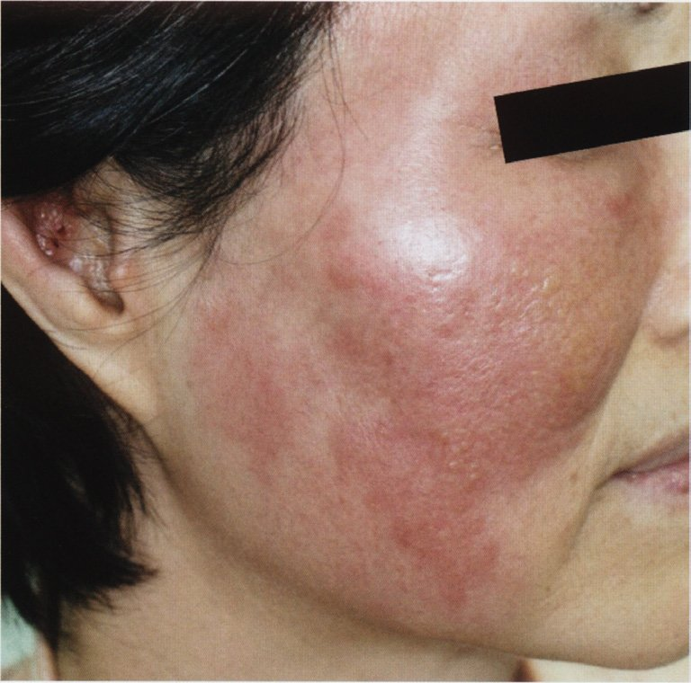
| 選択肢 | 解説 |
|---|---|
| ａ せ つ | せつ〈癤〉は毛包を中心とした黄色ブドウ球菌の深在性感染で、中心に膿栓をもつ限局性の有痛性結節として現れる。「顔面の広い面が一様に赤く腫れて両側へ拡大する」という広がり方はしない。複数のせつが融合したものを癰〈よう〉と呼ぶ。 |
| ◯ ｂ 丹 毒 | ①悪寒を伴う38℃台の発熱が皮疹に先行、②顔面に熱感を伴う境界明瞭な浮腫性紅斑、③急速に両側へ拡大、④所属（右耳後部）リンパ節腫大、⑤白血球12,100・CRP 7.8mg/dLの強い炎症反応——この組合せは丹毒〈erysipelas〉に典型的である。丹毒は真皮浅層〜浅在リンパ管の急性A群β溶連菌感染で、好発部位は顔面と下腿、全身症状（悪寒戦慄・発熱）が皮疹に先行あるいは同時に出るのが特徴である。 |
| ｃ ひょう疽 | ひょう疽〈瘭疽〉は指趾末節、とくに爪周囲の化膿性炎で、拍動性の激痛を伴う指先の腫脹が本態である。部位が顔面ではないので直ちに除外できる。 |
| ｄ ブドウ球菌性熱傷様皮膚症候群 | ブドウ球菌性熱傷様皮膚症候群〈SSSS〉は、黄色ブドウ球菌の表皮剝脱毒素〈exfoliative toxin〉が血行性に全身へ回って生じる。乳幼児に好発し、口囲の放射状亀裂・全身のびまん性紅斑・Nikolsky現象陽性のびらんを来す。50歳の成人で顔面に限局する例は該当しない。 |
| ｅ 蜂窩織炎 | 蜂窩織炎〈蜂巣炎〉は真皮深層〜皮下脂肪織の細菌感染で、境界不明瞭でびまん性の発赤・腫脹・圧痛を呈する。本問の最大の鑑別点は「境界」と「深さ」で、丹毒＝境界明瞭・鮮紅色・隆起する／蜂窩織炎＝境界不明瞭・暗赤色・平坦。また蜂窩織炎は下腿に多く、顔面で両側へ急速拡大する経過は丹毒らしい。 |
| 疾患 | 深さ | 境界 | 起炎菌 | 特徴 |
|---|---|---|---|---|
| 丹 毒 | 真皮浅層＋浅在リンパ管 | 明瞭・隆起（土手状） | A群β溶連菌 | 顔面・下腿／悪寒戦慄が先行 |
| 蜂窩織炎 | 真皮深層〜皮下脂肪織 | 不明瞭・平坦 | 黄色ブドウ球菌・溶連菌 | 下腿に多い／糖尿病・浮腫が素因 |
| 壊死性筋膜炎 | 筋膜 | 不明瞭 | A群β溶連菌・嫌気性菌 | 見た目に不釣り合いな激痛・血疱・握雪感・急速なショック＝緊急デブリドマン |
| せ つ | 毛包（深在性） | 限局した結節 | 黄色ブドウ球菌 | 中心に膿栓／複数融合＝癰 |
| 接触皮膚炎 | 表皮・真皮浅層 | 接触部位に一致 | —（非感染） | 瘙痒が主体で発熱しない |
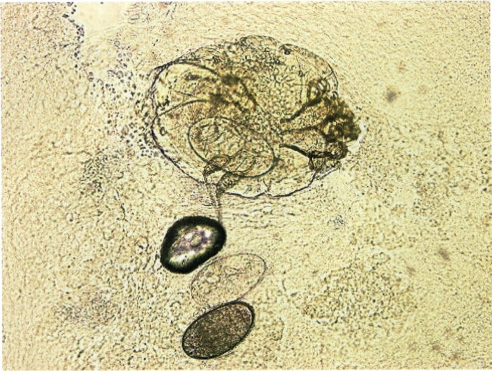
| 選択肢 | 解説 |
|---|---|
| ａ 蚊により媒介される。 | 疥癬はヒゼンダニ〈Sarcoptes scabiei var. hominis〉が角層内に寄生して起こるもので、媒介する昆虫（ベクター）は存在しない。虫体そのものが皮膚から皮膚へ直接移動する。 |
| ｂ 有効な治療薬はない。 | イベルメクチン内服、フェノトリンローション外用、イオウ含有外用薬、クロタミトン外用など有効な治療薬がある。近年はフェノトリン外用とイベルメクチン内服が主軸で、1回では卵に効かないため1週間後に再投与するのが要点である。 |
| ◯ ｃ ヒトからヒトへ感染する。 | 疥癬はヒゼンダニの直接接触による人から人への感染症である。介護施設・病院での集団発生が典型的で、本例が「介護老人保健施設に入所中」とされているのはそのためである。通常疥癬は長時間の肌と肌の接触で伝播し、角化型（ノルウェー）疥癬は寝具・衣類を介した間接接触でも伝播する。 |
| ｄ 近年はまれな疾患となった。 | 高齢化と施設入所者の増加により、疥癬はむしろ増加している。高齢者施設・療養病床での集団発生は現在も日常的な問題であり、「まれな疾患」ではない。 |
| ｅ アトピー性皮膚炎の原因の一つである。 | アトピー性皮膚炎はフィラグリン遺伝子異常などを背景としたバリア障害＋Th2型炎症による慢性疾患で、疥癬とは病因が無関係である。ただし疥癬は湿疹と誤診されてステロイド外用を受け、悪化・拡大してから紹介されることが多い——これは「原因」ではなく「誤診されやすい」という関係である。 |
| 項目 | 通常疥癬 | 角化型疥癬 |
|---|---|---|
| 寄生虫数 | 数十匹 | 100万〜200万匹 |
| 宿主 | 免疫正常 | 高齢・低栄養・ステロイド／免疫抑制薬・HTLV-1・HIV |
| 皮疹 | 紅色丘疹・疥癬トンネル・陰部結節 | 灰白色の厚い角質増殖（牡蠣殻状）。頭部・顔面・爪も侵す |
| 瘙痒 | 激烈 | 乏しいことがある（だから見逃す） |
| 感染力 | 低い（長時間の直接接触が必要） | 極めて高い。短時間接触・寝具や衣類経由でも伝播 |
| 隔離 | 個室隔離は不要 | 個室隔離が必要 |
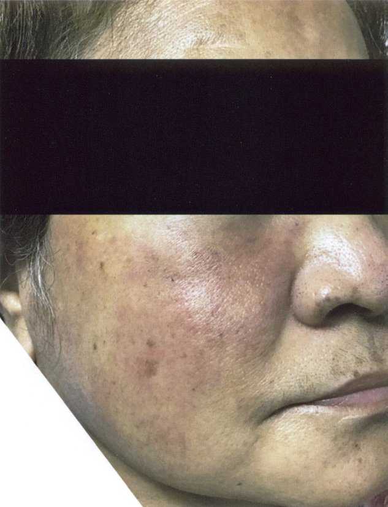
| 選択肢 | 解説 |
|---|---|
| ａ 結核菌 | 皮膚結核（尋常性狼瘡・皮膚腺病）は数か月〜数年かけて緩徐に進行する慢性肉芽腫性病変で、2日で39℃の発熱と急速な浮腫性紅斑を来す経過とは全く異なる。 |
| ｂ 緑膿菌 | 緑膿菌〈Pseudomonas aeruginosa〉による皮膚感染は、熱傷創・褥瘡・好中球減少患者の壊疽性膿瘡〈ecthyma gangrenosum〉など「defectのある皮膚」「易感染宿主」に起こる。生来健康な65歳の顔面に一次感染することは考えにくい。 |
| ｃ カンジダ | 皮膚カンジダ症は間擦部（指間・鼠径・乳房下）に浸軟した紅斑と衛星病巣を作るもので、高熱と急速な顔面腫脹を来す病態ではない。 |
| ◯ ｄ A群β溶連菌 | 悪寒を伴う39℃台の発熱が先行し、境界明瞭で硬結・圧痛を伴う浮腫性紅斑が顔面に片側性に生じる——典型的な丹毒であり、起炎菌はA群β溶血性連鎖球菌〈Streptococcus pyogenes〉である。丹毒の起炎菌はほぼA群β溶連菌に限られると考えてよく、治療はペニシリン系抗菌薬となる。 |
| ｅ 水痘・帯状疱疹ウイルス | 三叉神経第1枝領域の帯状疱疹なら、神経支配領域に一致して片側性に「集簇性小水疱」が並ぶのが必発である。本例は水疱がなく浮腫性紅斑のみで、皮膚分節に沿う分布でもない。また「先行する神経痛」があって発熱は目立たないのが普通で、悪寒を伴う39℃の高熱が先行する経過は溶連菌感染らしい。 |
| 疾患 | 決め手 | 発熱 |
|---|---|---|
| 丹 毒 | 境界明瞭な浮腫性紅斑・熱感・圧痛。悪寒戦慄が先行 | 39℃台 |
| 帯状疱疹（三叉神経第1枝） | 神経支配域に一致した集簇性小水疱＋先行する神経痛。Hutchinson徴候 | 微熱程度 |
| 眼窩蜂窩織炎 | 眼球突出・眼球運動障害・視力低下。副鼻腔炎に続発 | 高熱 |
| 接触皮膚炎 | 瘙痒主体・接触部位に一致・原因物質の心当たり | なし |
| 血管性浮腫 | 眼瞼・口唇の非圧痕性腫脹、瘙痒に乏しい、数時間〜数日で消退 | なし |
| 選択肢 | 解説 |
|---|---|
| ａ 癜 風 | 癜風〈でんぷう〉はマラセチア〈Malassezia〉による表在性真菌症である。体幹・上腕に淡褐色〜白色の細かい鱗屑を伴う斑が多発し、自覚症状に乏しく慢性の経過をとる。細菌ではない。 |
| ｂ 掌蹠膿疱症 | 掌蹠膿疱症は手掌・足底に無菌性膿疱を反復する慢性疾患で、病巣感染（扁桃炎・歯性感染）や喫煙が増悪因子だが、膿疱そのものは無菌（細菌培養陰性）である。胸鎖関節痛（掌蹠膿疱症性骨関節炎）を伴うことがある。 |
| ｃ 膿疱性乾癬 | 膿疱性乾癬は発熱を伴って全身の紅斑上に無菌性膿疱が多発する乾癬の重症型で、指定難病である。発熱するので紛らわしいが、膿疱は無菌性で感染症ではない。 |
| ｄ 化膿性汗腺炎 | 化膿性汗腺炎〈hidradenitis suppurativa〉は腋窩・鼠径・殿部の毛包閉塞に始まり、瘻孔・瘢痕を形成する慢性再発性の炎症性疾患である。二次的に細菌感染を伴うが本態は慢性の毛包炎症性疾患で、「急性の」細菌感染症とは呼べない。 |
| ◯ ｅ 伝染性膿痂疹 | 伝染性膿痂疹〈とびひ〉は、黄色ブドウ球菌（水疱性膿痂疹）またはA群β溶連菌（痂皮性膿痂疹）による急性の細菌感染症である。小児の夏季に多く、掻破した手を介して皮疹が「飛び火」する。選択肢の中で唯一、菌が皮膚に感染している急性疾患である。 |
| 疾患 | 膿疱の性質 | 本態 |
|---|---|---|
| 伝染性膿痂疹 | 細菌性（黄色ブドウ球菌／溶連菌） | 急性の細菌感染症 |
| 毛包炎・せつ | 細菌性（黄色ブドウ球菌） | 毛包の細菌感染 |
| 掌蹠膿疱症 | 無菌性 | 病巣感染・喫煙を背景とする自己炎症性疾患 |
| 膿疱性乾癬 | 無菌性 | 乾癬の重症型（IL-36経路）。発熱を伴う |
| Behçet病の毛包炎様皮疹 | 無菌性 | 血管炎・針反応陽性 |
| 角層下膿疱症 | 無菌性 | 環状に配列する弛緩性膿疱 |
| 選択肢 | 解説 |
|---|---|
| ａ 疥 癬 | 疥癬は「夜も眠れない」ほどの激烈な瘙痒が主症状である。虫体・虫卵・糞に対するⅣ型アレルギーによるため、皮疹の数に比して瘙痒が強い。 |
| ｂ 扁平苔癬 | 扁平苔癬は「4つのP」——purple（紫紅色）、polygonal（多角形）、pruritic（瘙痒性）、papule（丘疹）で記憶される疾患で、瘙痒は診断の構成要素そのものである。表面のWickham線条、口腔粘膜のレース状白斑、C型肝炎との関連も押さえる。 |
| ◯ ｃ 尋常性狼瘡 | 尋常性狼瘡〈lupus vulgaris〉は皮膚結核の一型で、結核菌に対する慢性の肉芽腫性炎症である。褐色調の局面が数年〜数十年かけて緩徐に拡大し、中央は瘢痕化しながら辺縁に新病変を作る。硝子圧法で「リンゴゼリー様」の黄褐色を呈するのが古典的所見で、自覚症状に乏しく、瘙痒はない。感染性肉芽腫は基本的に痒くないと覚えるとよい。 |
| ｄ 疱疹状皮膚炎 | 疱疹状皮膚炎〈Duhring〉は「dermatitis herpetiformis」の名のとおり、肘・膝・殿部の伸側に集簇する小水疱と、それに伴う激しい瘙痒が特徴である。瘙痒が強すぎて水疱が掻き壊され、びらんしか見えないこともある。グルテン過敏性腸症を合併し、真皮乳頭部への顆粒状IgA沈着、DDSが著効する。 |
| ｅ 水疱性類天疱瘡 | 水疱性類天疱瘡は高齢者に生じる自己免疫性水疱症で、緊満性水疱が出る前に「瘙痒を伴う浮腫性紅斑・蕁麻疹様紅斑」の前駆期（前駆症状としての瘙痒）がある。「高齢者の難治性の痒み」として発症することが多いため、瘙痒を伴わないとは言えない。 |
| 疾患 | 理由 | |
|---|---|---|
| 痒い | 疥 癬 | 虫体・虫卵へのⅣ型アレルギー。夜間増強 |
| アトピー性皮膚炎・湿疹・蕁麻疹 | Th2型炎症、ヒスタミン・IL-31 | |
| 扁平苔癬・疱疹状皮膚炎 | 4つのP／Duhringは激烈な瘙痒が定義的 | |
| 水疱性類天疱瘡 | 前駆期の瘙痒性紅斑で発症することが多い | |
| 痒くない | 尋常性狼瘡・皮膚腺病（皮膚結核） | 慢性肉芽腫。自覚症状に乏しい |
| サルコイドーシス | 非乾酪性肉芽腫。無症候の局面 | |
| 癜 風 | マラセチアの表在寄生。無症候か軽度 | |
| 尋常性乾癬 | 痒みは軽度〜なしのことが多い（あっても軽い） |
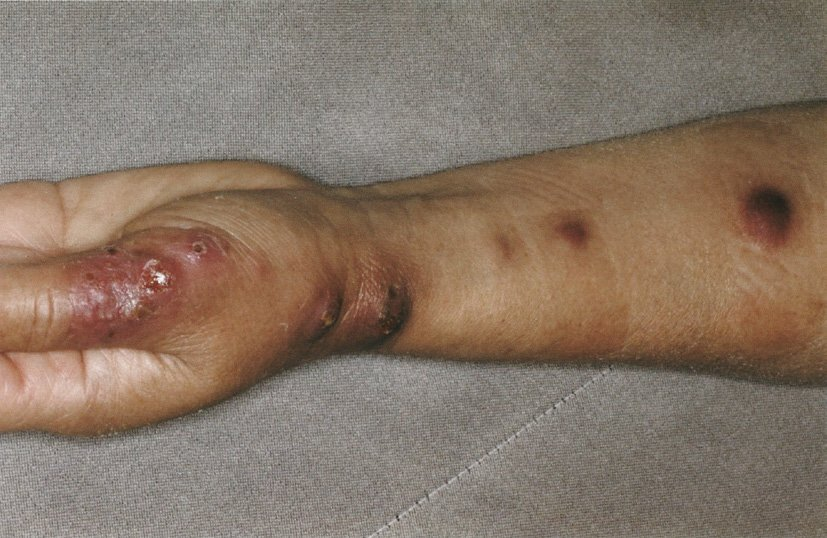
| 選択肢 | 解説 |
|---|---|
| ａ 丹 毒 | 丹毒は悪寒戦慄を伴う高熱と、境界明瞭で熱感・圧痛の強い浮腫性紅斑が特徴である。本例は「局所熱感と圧痛を認めない」と明記されており、2か月の緩徐な経過でもある。急性化膿性炎ではない。 |
| ｂ 化膿性粉瘤 | 感染性粉瘤〈化膿性粉瘤〉は既存の表皮嚢腫に細菌感染が起きたもので、強い発赤・熱感・圧痛を伴う単発の有痛性腫瘤となる。前腕に線状に多発する経過はとらず、肉芽腫も作らない。 |
| ◯ ｃ 非結核性抗酸菌症 | ①水族館勤務＝水系曝露、②2か月かけて母指から前腕へ結節が上行性に多発、③熱感・圧痛に乏しい、④病理で類上皮細胞肉芽腫、⑤真菌培養陰性かつ胞子状菌要素なし（＝真菌を否定）、⑥小川培地（抗酸菌用培地）で7週後に白色コロニー——これは Mycobacterium marinum による皮膚非結核性抗酸菌症〈非定型抗酸菌症〉に決まる。M. marinum は至適発育温度が30℃前後と低く、体温より低い四肢末梢の皮膚に病巣を作るのが特徴である。 |
| ｄ 蜂巣炎〈蜂窩織炎〉 | 蜂窩織炎は境界不明瞭なびまん性の発赤・腫脹・熱感・圧痛と発熱を伴う急性感染症である。「熱感と圧痛を認めない」時点で除外でき、結節が多発して肉芽腫を作ることもない。 |
| ｅ スポロトリコーシス | スポロトリコーシスはSporothrix schenckii による深在性真菌症で、園芸・農作業での外傷（バラの棘・水苔）を契機に、リンパ管に沿って線状に結節が並ぶ（リンパ管型）——臨床像は本例に極めてよく似ている。決定的な除外根拠は検査所見で、①真菌培養が陰性、②胞子状菌要素を認めない、③抗酸菌用の小川培地でコロニーが生えた——いずれも真菌症を否定し、抗酸菌症を支持する。 |
| 疾患 | 曝露歴 | 培養・検査 | 治療 |
|---|---|---|---|
| M. marinum 感染症 | 水槽・水族館・魚 | 小川培地30℃で数週後にコロニー。真菌培養は陰性 | クラリスロマイシン・ミノサイクリン等 |
| スポロトリコーシス | 土壌・園芸・バラの棘・水苔 | Sabouraud培地で真菌培養陽性。星芒体〈asteroid body〉 | ヨウ化カリウム内服・イトラコナゾール |
| ノカルジア症 | 土壌・免疫抑制 | 部分抗酸性のGram陽性分枝桿菌 | ST合剤 |
| 皮膚リーシュマニア症 | 流行地渡航・サシチョウバエ | 塗抹でamastigote | アンチモン剤 |
| 皮膚腺病 | 結核既往・リンパ節結核 | 頸部リンパ節から皮膚へ穿破。瘻孔形成 | 抗結核薬多剤併用 |
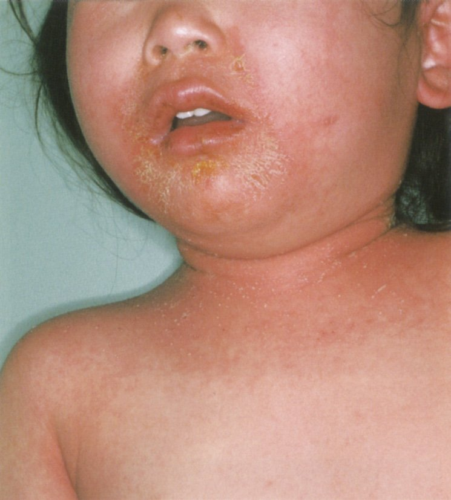
| 選択肢 | 解説 |
|---|---|
| ａ 風 疹 | 風疹は淡紅色の小紅斑が顔から全身へ広がり、耳後部・後頸部リンパ節腫脹を伴う。3日で消退し（三日はしか）、接触痛やびらんは生じない。口囲の痂皮・接触痛はまったく説明できない。 |
| ｂ 麻 疹 | 麻疹はカタル期（発熱・咳嗽・鼻汁・結膜炎）とKoplik斑を経て、いったん解熱してから再び発熱するとともに融合傾向のある紅斑が耳後部から下降する。本例には眼・口腔粘膜の異常がなく（＝結膜炎もKoplik斑もない）、接触痛やびらんも麻疹では説明できない。 |
| ｃ 伝染性紅斑 | 伝染性紅斑〈りんご病〉はヒトパルボウイルスB19による。両頬に境界明瞭な蝶翼状の紅斑（平手打ち様）が出て、四肢にレース状・網目状の紅斑が続く。発疹が出る頃には解熱しており全身状態は良好で、接触痛や口囲の痂皮は伴わない。 |
| ｄ Stevens-Johnson症候群 | SJSは薬剤（および Mycoplasma 感染）を契機に生じる重症薬疹で、眼粘膜（結膜充血・偽膜）・口唇口腔粘膜（びらん・血痂）の粘膜疹が必須である。本例は「薬剤内服歴はない」「眼粘膜と口腔粘膜に異常を認めない」と二重に否定されているため除外される。 |
| ◯ ｅ ブドウ球菌性熱傷様皮膚症候群 | ①乳幼児、②口囲・鼻周囲の紅斑＋鱗屑＋黄色痂皮（放射状亀裂）、③頸部・腋窩・鼠径といった間擦部に高度なびまん性紅斑、④接触痛（＝表皮が剝がれかけている）、⑤眼・口腔の粘膜疹がない、⑥ASO陰性（溶連菌ではない）——ブドウ球菌性熱傷様皮膚症候群〈SSSS〉の典型像である。黄色ブドウ球菌が産生する表皮剝脱毒素〈ET〉が血行性に全身へ回り、Dsg1を分解して顆粒層で表皮が剝離する。 |
| 項目 | SSSS | SJS/TEN | 尋常性天疱瘡 |
|---|---|---|---|
| 原因 | 黄色ブドウ球菌の表皮剝脱毒素 | 薬剤・Mycoplasma | 抗Dsg3（±Dsg1）自己抗体 |
| 裂隙の高さ | 顆粒層（表皮内・ごく浅い） | 表皮全層壊死＋表皮下 | 基底層直上（表皮内） |
| 粘膜疹 | なし | 必発（眼・口唇・外陰） | 口腔粘膜びらんで初発することが多い |
| 好発年齢 | 乳幼児 | 全年齢 | 中高年 |
| Nikolsky現象 | 陽性 | 陽性 | 陽性 |
| 治療 | 抗菌薬＋支持療法 | 被疑薬中止＋ステロイド・IVIG | ステロイド＋免疫抑制薬 |
| 予後 | 良好・瘢痕を残さない | TENは致死率20〜30％ | 治療により制御 |
| 選択肢 | 解説 |
|---|---|
| ａ 尿培養 | 尿路感染症・腎盂腎炎も悪寒戦慄を伴う菌血症の原因になるが、本例は「頻尿や排尿時痛もない」「両側背部の叩打痛はない」と明確に否定されている。加えて、感染巣が尿路であっても敗血症を疑う以上は血液培養が最優先になる。 |
| ◯ ｂ 血液培養 | 悪寒戦慄＋39.2℃＋収縮期血圧86mmHg＋脈拍112＋呼吸数28＋意識レベル低下（JCSⅠ-2）——qSOFA（意識変容・収縮期血圧≦100・呼吸数≧22）を3項目すべて満たす敗血症である。悪寒戦慄〈shaking chill〉は菌血症を強く示唆する所見で、感染巣は「搔破痕・痂皮のある破綻したアトピー性皮膚炎の皮膚」と推定される。敗血症を疑ったら、抗菌薬投与前に血液培養2セット（好気・嫌気×2部位）を採取する——これが原則である。 |
| ｃ 喀痰Gram染色 | 「咳、痰および鼻汁はない」「呼吸音に異常を認めない」と記載されており、そもそも喀痰が出ない。肺炎を示唆する所見がない。 |
| ｄ 麻疹抗体価測定 | 麻疹はカタル症状（咳・鼻汁・結膜炎）とKoplik斑を伴い、発熱と発疹が段階的に出現する。本例の皮疹は長年のアトピー性皮膚炎による慢性湿疹病変（色素沈着・鱗屑・苔癬化）であって新規の発疹ではない。また抗体価は結果が出るまで日数がかかり、ショックの患者に「最も適切な検査」とはならない。 |
| ｅ インフルエンザ迅速検査 | 咽頭痛・咳・鼻汁といった上気道症状がなく、「周囲に同様の症状の人はいない」と流行状況も否定されている。インフルエンザ単独でqSOFA 3点のショックに至る経過は説明しにくい。 |
| 段階 | 内容 |
|---|---|
| 気づく | qSOFA：①意識変容 ②収縮期血圧≦100mmHg ③呼吸数≧22/分 のうち2項目以上（本例は3項目すべて該当） |
| 悪寒戦慄 | 震えが止まらないレベル＝菌血症の可能性が高い。「寒気がする」程度とは区別する |
| ①培養 | 血液培養2セット（好気＋嫌気を2部位から）を抗菌薬投与前に採取。感染巣に応じて尿・喀痰・膿も |
| ②抗菌薬 | 認知から1時間以内に広域抗菌薬を経験的に開始 |
| ③蘇生 | 晶質液30mL/kgの急速輸液、乳酸値測定、反応不良なら昇圧薬（ノルアドレナリン） |
| ④感染巣制御 | 膿瘍ドレナージ、壊死組織デブリドマン、カテーテル抜去 |
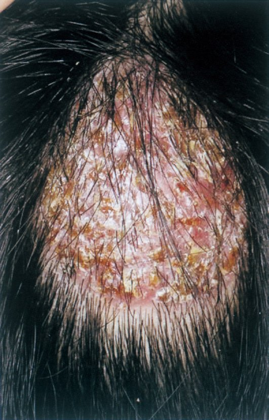
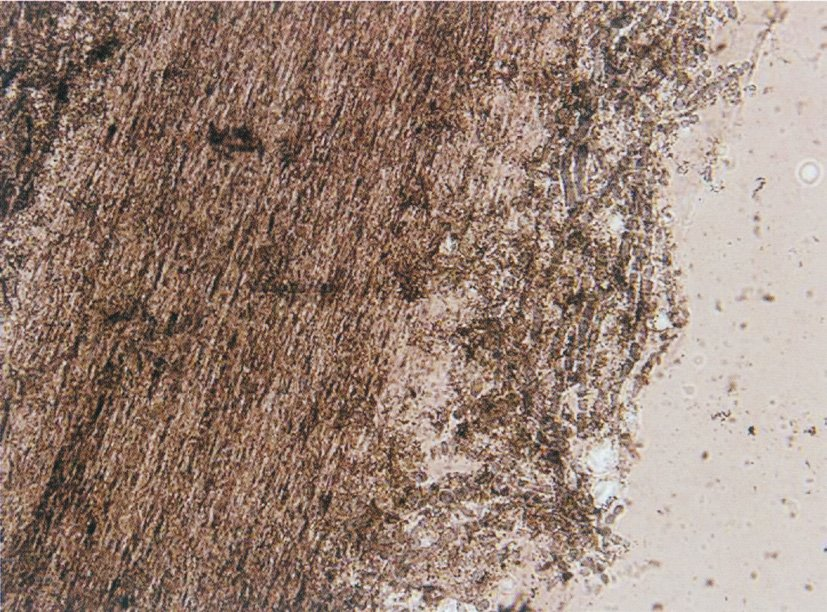
| 選択肢 | 解説 |
|---|---|
| ａ イソニアジド | イソニアジドは抗結核薬である。頭部の皮膚結核（皮膚腺病）は数か月〜年単位で瘻孔を形成する慢性経過で、KOH直接鏡検で菌糸が見えることはない。 |
| ｂ バラシクロビル | バラシクロビルは抗ヘルペスウイルス薬である。頭部の帯状疱疹なら片側の神経支配域に一致した集簇性小水疱となり、脱毛斑や易抜毛性、KOHでの菌糸は説明できない。 |
| ｃ ミノサイクリン | ミノサイクリンは抗菌薬である。膿疱と排膿があるため細菌感染（頭部の毛包炎・せつ）を疑いたくなるが、Celsus禿瘡の膿疱・排膿は白癬菌に対する強いアレルギー反応（化膿性肉芽腫）で、細菌培養は陰性のことが多く、抗菌薬では治らない。ここを誤ると病変が拡大し瘢痕性脱毛を残す。 |
| ◯ ｄ イトラコナゾール | ①2か月前からの痒みを伴う脱毛斑、②ステロイド外用で増悪（＝真菌が増える）、③ネコの飼育歴、④膿疱・排膿・圧痛、⑤易抜毛性、⑥所属リンパ節腫脹、⑦KOH直接鏡検で毛内に菌要素——Celsus禿瘡〈ケルスス禿瘡＝深在性の頭部白癬〉である。毛の内部に菌が寄生しているため外用薬は毛内へ届かず、抗真菌薬の内服（イトラコナゾールまたはテルビナフィン）が必須である。 |
| ｅ レボフロキサシン | レボフロキサシンはニューキノロン系抗菌薬で、ｃと同じ理由で不適である。真菌には無効であり、小児では関節毒性の懸念から通常は選択されない。 |
| 疾患 | 炎症 | 抜毛 | 決め手 |
|---|---|---|---|
| Celsus禿瘡 | 強い（膿疱・排膿・圧痛） | 容易（易抜毛性） | KOHで毛内に菌要素／リンパ節腫脹／ペット・格闘技 |
| 頭部白癬（浅在性） | 軽い（鱗屑・断毛） | やや容易 | KOH陽性。Wood灯でM. canisは黄緑色蛍光 |
| 円形脱毛症 | なし（皮膚は正常） | 辺縁で容易（感嘆符毛） | 境界明瞭な円形脱毛。自己免疫。爪の点状陥凹 |
| 抜毛症 | なし | — | 不整形・長さの不揃いな断毛。心理的背景 |
| 頭部の膿皮症（せつ・毛包炎） | 強い | — | 細菌培養陽性。KOH陰性。抗菌薬が効く |
| 脂漏性皮膚炎 | 軽い紅斑・鱗屑 | — | 脱毛は目立たない。マラセチア関与 |
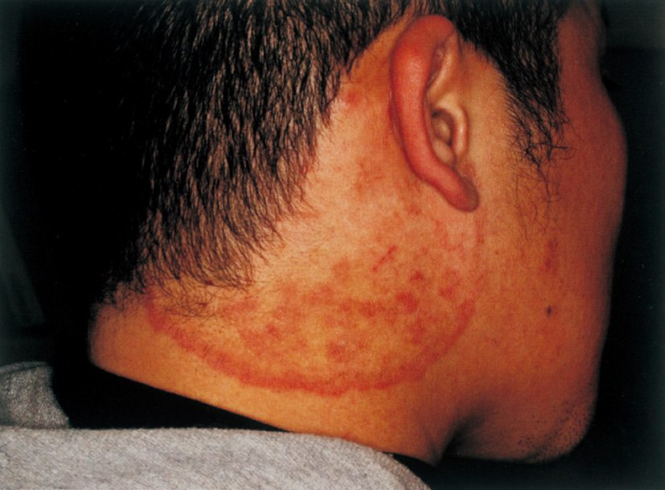
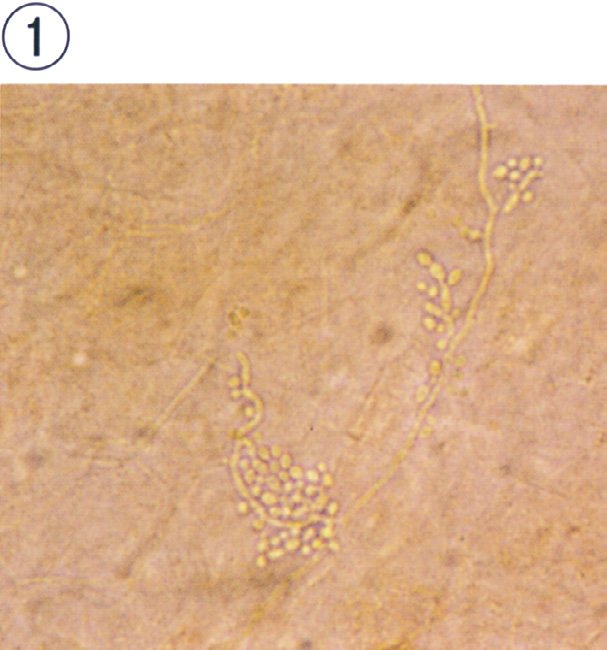
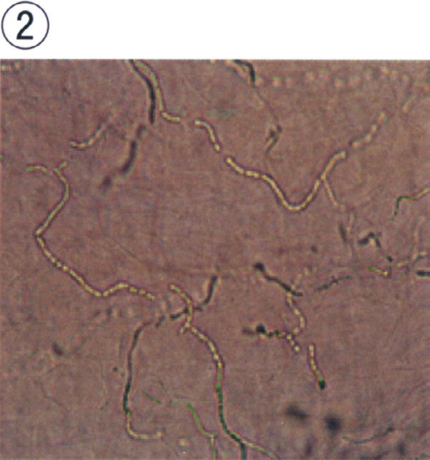
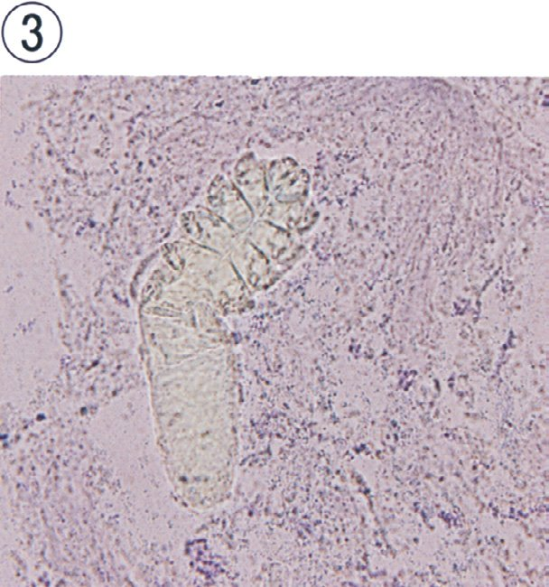
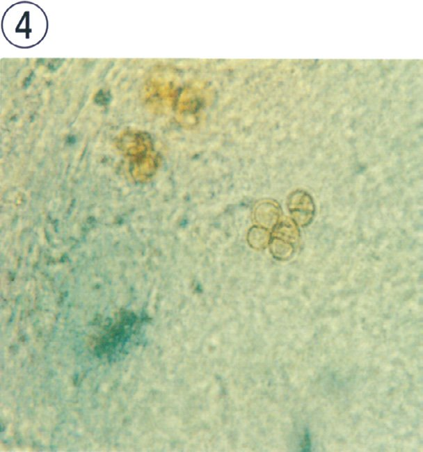
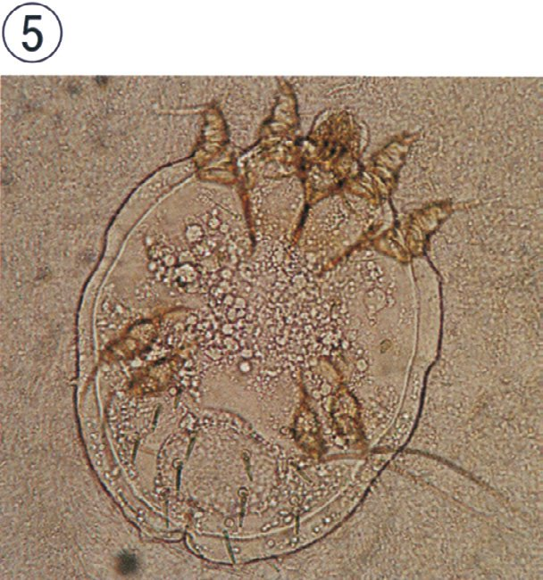
| 選択肢 | 解説 |
|---|---|
| ａ ① | 長く伸びた仮性菌糸〈pseudohypha〉に沿って、卵円形の分芽胞子〈blastoconidia〉がブドウの房状に集簇している。仮性菌糸＋分芽胞子＝カンジダ〈Candida〉の像である。カンジダは間擦部（指間・鼠径・乳房下・陰股部）に浸軟した紅斑と衛星病巣を作るため、頸部の環状に拡大する鱗屑性紅斑とは病像が異なる。 |
| ◯ ｂ ② | 太さの揃った菌糸が長く伸び、規則的な隔壁でくびれて数珠状に見え、Y字型に分枝している——これが白癬菌〈皮膚糸状菌〉の分節菌糸で、角層の鱗屑をKOHで溶かしたときに見える典型像である。頸部（体部）に3か月かけて痒みを伴いながら遠心性に拡大する鱗屑性紅斑＝体部白癬〈生毛部白癬・たむし〉で、本例の臨床像と一致する。 |
| ｃ ③ | 前方に短く太い脚が集まり、後方に細長い環状の腹部が伸びる虫体が組織内に見えている。毛包虫〈ニキビダニ、Demodex folliculorum〉で、毛包内に常在するダニである。酒皶様皮膚炎や毛包虫症で問題になるが、角層の鱗屑をKOHで見て出てくるものではない。 |
| ｄ ④ | 厚い壁をもつ褐色の球形細胞が数個ずつ集簇し、一部は内部に隔壁（十字）を認める——硬壁小体〈muriform cell、sclerotic body〉で、黒色真菌による深在性真菌症＝クロモミコーシスの所見である。外傷を契機に下肢などに疣状の局面を作る慢性疾患で、表在性の体部白癬とは別物である。 |
| ｅ ⑤ | 円形の体に短い脚と剛毛をもつ虫体が見えている——ヒゼンダニ〈Sarcoptes scabiei〉すなわち疥癬の所見である。疥癬なら指間・手関節屈側・陰部に丘疹が多発し夜間に激しい瘙痒を訴えるはずで、頸部に限局して環状に拡大する経過とは合わない。 |
| 部位 | 呼称 | 治療 |
|---|---|---|
| 体幹・四肢（生毛部） | 体部白癬（たむし・ぜにたむし） | 抗真菌薬外用 |
| 股部 | 股部白癬（いんきんたむし） | 抗真菌薬外用 |
| 足 | 足白癬（みずむし） | 抗真菌薬外用 |
| 爪 | 爪白癬 | 内服（テルビナフィン・イトラコナゾール）またはエフィナコナゾール等の爪外用液 |
| 頭部 | 頭部白癬・Celsus禿瘡 | 内服（毛内寄生のため外用は届かない） |
| 顔面 | 顔面白癬 | 外用（ステロイドで異型化しやすい部位） |
| 選択肢 | 解説 |
|---|---|
| ａ 採取した鱗屑をスライドガラスに載せる。 | 正しい。検体は鱗屑・水疱蓋・爪の混濁部など「菌がいる場所」から採る。足白癬では趾間の浸軟した鱗屑や、小水疱型なら水疱蓋を鋏やメスで採取する。 |
| ｂ 20％KOH溶液を滴下する。 | 正しい。KOHがケラチン（角質）を溶かして透明化し、ケラチンを持たない菌要素だけが残って見えるようになる。濃度は10〜30％程度が用いられ、爪など硬い検体には高濃度やDMSO添加を使う。 |
| ◯ ｃ 墨汁を滴下する。 | 誤り＝これが正解。墨汁法〈India ink法〉は、髄液中のクリプトコッカスの莢膜を「墨で染まらない抜けた輪」として観察する方法であり、白癬の直接鏡検には用いない。KOH標本を見やすくしたい場合に加えるのはParker inkやクロラゾールブラックE、蛍光を用いるならcalcofluor whiteである。 |
| ｄ カバーガラスをかぶせる。 | 正しい。カバーガラスをかけて軽く圧迫し、検体を薄く均一に広げる。気泡は菌糸と紛らわしいので押し出す。 |
| ｅ ホットプレートで数分加温する。 | 正しい。加温するとKOHによる角質の溶解が促進され、数分で観察可能になる。加温しない場合は室温で20〜30分放置する。加熱しすぎるとKOHが結晶化して観察を妨げる。 |
| 検査 | 対象 | 見えるもの |
|---|---|---|
| KOH直接鏡検 | 鱗屑・毛・爪 | 白癬菌・カンジダ・マラセチア・ヒゼンダニ |
| 墨汁法〈India ink〉 | 髄液 | クリプトコッカスの莢膜（黒い背景に抜けた輪） |
| Tzanck試験 | 水疱底の擦過物 | ウイルス性巨細胞・棘融解細胞（ヘルペス／天疱瘡） |
| Ziehl-Neelsen染色 | 膿・滲出液・組織 | 抗酸菌（赤い桿菌） |
| Gram染色 | 膿・分泌物 | 細菌のGram陽性／陰性と形態 |
| Wood灯 | 頭部・体表 | M. canis＝黄緑色蛍光、紅色陰癬＝サンゴ色、尋常性白斑＝白色増強 |
| ダーモスコピー | 色素性病変・脱毛・疥癬 | 色素ネットワーク、疥癬トンネル先端の三角形の影 |
| 選択肢 | 解説 |
|---|---|
| ａ 丹 毒 | 丹毒はA群β溶連菌が真皮浅層とリンパ管に「菌そのものが侵入・増殖」して起こす化膿性炎である。病変部から菌が検出される＝毒素が離れた場所で作用する病態ではない。なお同じ溶連菌でも、発赤毒（発熱毒素）が全身に回る猩紅熱は毒素性である——菌が同じでも病態で分ける。 |
| ｂ 瘭 疽 | 瘭疽〈ひょう疽〉は指趾末節・爪周囲への黄色ブドウ球菌などの直接感染による化膿性炎である。局所で菌が増殖して膿瘍を作る典型的な起炎菌感染で、毒素性ではない。 |
| ◯ ｃ 伝染性膿痂疹 | 水疱性膿痂疹は、黄色ブドウ球菌が産生する表皮剝脱毒素〈exfoliative toxin: ET〉がデスモグレイン1〈Dsg1〉を分解して顆粒層に水疱を作る——水疱そのものは毒素による表皮細胞接着の破壊であり、外毒素が起こす皮膚病変である。SSSSと同じ毒素が「局所で」働いた形と理解するとよい。 |
| ｄ 蜂巣炎〈蜂窩織炎〉 | 蜂窩織炎は真皮深層〜皮下脂肪織に菌が侵入・増殖して起こす化膿性炎である。病巣に菌が存在する感染症であり、毒素性ではない。 |
| ◯ ｅ ブドウ球菌性熱傷様皮膚症候群 | SSSSは、鼻腔・咽頭などの巣で増えた黄色ブドウ球菌が産生した表皮剝脱毒素が血行性に全身の表皮へ到達し、Dsg1を分解して広範な表皮剝離を起こす。皮疹部そのものには菌がいない（培養陰性）という点で、「外毒素が起こす皮膚病変」の最も純粋な例である。 |
| 項目 | 水疱性膿痂疹 | SSSS |
|---|---|---|
| 毒素の作用範囲 | 局所（菌のいる場所） | 全身（血行性に播種） |
| 皮疹部の菌 | いる（培養陽性） | いない（培養陰性） |
| 皮疹 | 限局した弛緩性水疱・びらん・薄い痂皮 | 全身のびまん性紅斑＋広範なびらん（熱傷様） |
| 全身症状 | 乏しい | 発熱・不機嫌・接触痛 |
| 裂隙の高さ | いずれも顆粒層（Dsg1が分解される高さ） | |
| 治療 | 抗菌薬（外用±内服） | 抗菌薬全身投与＋熱傷に準じた支持療法 |
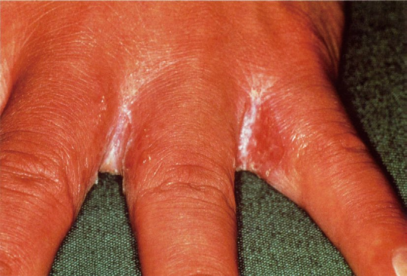
| 選択肢 | 解説 |
|---|---|
| ａ 細菌培養 | 指間の細菌感染（趾間・指間の膿皮症）もあり得るが、本例は発赤・熱感・圧痛・排膿といった化膿性炎の所見が記載されておらず、「痒み」が主症状である。まず行う検査としては真菌の検索が優先する。 |
| ｂ 皮膚生検 | 皮膚生検は侵襲があり結果も数日を要する。KOH直接鏡検という無侵襲・数分で結果の出る検査があるのに、それを飛ばして生検に進むのは順序が逆である。生検は真菌が否定され、なお診断がつかないときの次の手。 |
| ｃ 外用薬の貼付試験 | 貼付試験〈パッチテスト〉はアレルギー性接触皮膚炎（Ⅳ型）を疑うときの検査である。ステロイド外用が無効という経過は接触皮膚炎らしくない（多くは奏効する）。またパッチテストは48・72時間後の判定が必要で、「まず行う検査」には適さない。 |
| ◯ ｄ KOH法による直接鏡検 | ①関節リウマチでの内服治療（＝ステロイドや免疫抑制薬による易感染状態）、②指間という間擦部（湿潤・浸軟しやすい）、③痒みを伴う皮疹、④ステロイド外用が無効（むしろ真菌は増える）——カンジダ性指間びらん症〈interdigital candidiasis, erosio interdigitalis blastomycetica〉をまず疑う。KOH直接鏡検は数分で結果が出て、仮性菌糸と分芽胞子を確認できればその場で抗真菌薬に切り替えられる。「鱗屑・びらんのある皮疹はステロイドを塗る前にKOH」が原則である。 |
| ｅ 内服薬のリンパ球刺激試験 | 薬剤リンパ球刺激試験〈DLST〉は薬疹を疑うときに被疑薬に対するリンパ球の反応を見る検査である。薬疹なら全身性の皮疹となるのが普通で、指間だけに限局する皮疹は薬疹らしくない。感度・特異度とも高くなく、まず行う検査にはならない。 |
| 疾患 | 境界・辺縁 | 決め手 | 治療 |
|---|---|---|---|
| カンジダ症 | 浸軟した紅斑＋周囲に衛星病巣 | KOHで仮性菌糸＋分芽胞子 | イミダゾール系外用 |
| 股部白癬 | 辺縁が堤防状に隆起・中心治癒。衛星病巣なし | KOHで分節菌糸 | 抗真菌薬外用 |
| 紅色陰癬 | 褐色調の平坦な斑 | Wood灯でサンゴ色蛍光（Corynebacterium minutissimum） | 抗菌薬外用 |
| 間擦疹（機械的） | 接触する面に一致 | 肥満・多汗が背景。KOH陰性 | 乾燥保持・亜鉛華 |
| 乳房外Paget病 | 境界明瞭な湿潤性紅斑。難治 | 生検（表皮内のPaget細胞） | 広範切除 |
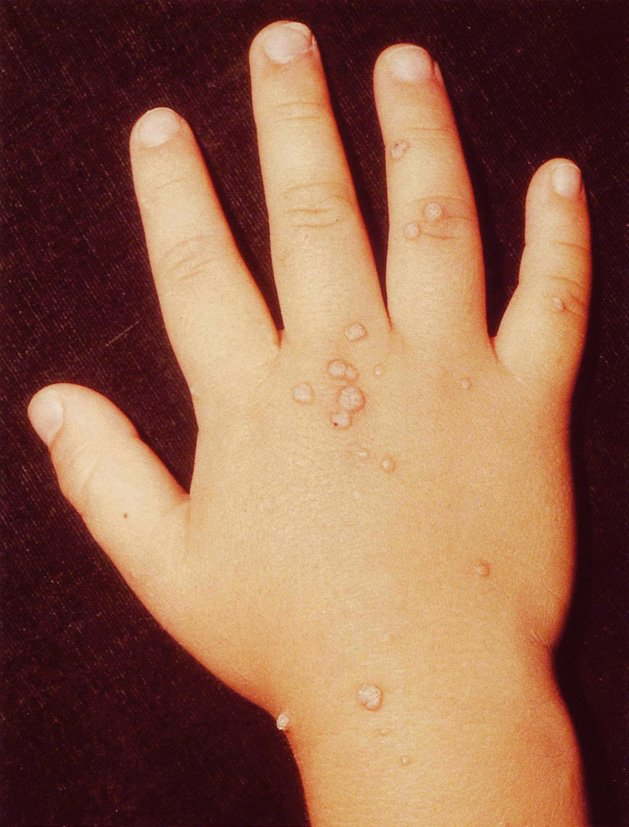
| 選択肢 | 解説 |
|---|---|
| ａ 酸素療法 | 酸素療法は低酸素血症に対する治療で、皮膚の疣贅とは無関係である。 |
| ◯ ｂ 凍結療法 | ①小児、②手背・肘頭・膝蓋という「よくぶつける部位」に、③1年かけて多発、④写真では表面が粗糙で角化した常色〜灰白色のドーム状小結節——尋常性疣贅〈verruca vulgaris、いぼ〉である。ヒト乳頭腫ウイルス〈HPV〉2型・27型・57型などが微小な傷から表皮基底細胞に感染して生じる。治療の第一選択は液体窒素による凍結療法〈cryotherapy〉で、1〜2週ごとに繰り返す。 |
| ｃ 温熱療法 | 温熱療法はスポロトリコーシスの補助療法や一部の腫瘍治療で用いられるが、尋常性疣贅の標準治療ではない。 |
| ｄ PUVA療法 | PUVA療法（ソラレン＋長波長紫外線）は乾癬・尋常性白斑・菌状息肉症などに用いる光線療法である。ウイルス性の疣贅には無効で、むしろ紫外線による免疫抑制は不利に働く。小児にPUVAを行うこと自体、長期発癌リスクの点で避けられる。 |
| ｅ 減感作療法 | 減感作療法〈アレルゲン免疫療法〉はアレルギー性鼻炎やハチ毒アナフィラキシーなどⅠ型アレルギーに行う。疣贅はアレルギー疾患ではない。 |
| 疾患 | 原因 | 特徴 | 治療 |
|---|---|---|---|
| 尋常性疣贅 | HPV 2・27・57型 | 粗糙な角化性丘疹。削ると点状出血（黒色点） | 液体窒素凍結療法 |
| 足底疣贅 | HPV 1型など | 足底で扁平化。圧痛は側方圧迫で強い | 凍結療法 |
| 青年性扁平疣贅 | HPV 3・10型 | 若年女性の顔面に扁平な小丘疹が多発。Köbner現象 | ビタミンD3外用・自然消退あり |
| 伝染性軟属腫〈水いぼ〉 | 伝染性軟属腫ウイルス（ポックスウイルス科） | 中心臍窩をもつ光沢のあるドーム状丘疹。粥状物を排出 | ピンセット摘除・自然消退 |
| 尖圭コンジローマ | HPV 6・11型 | 陰部の乳頭状・鶏冠状腫瘤。性感染症 | イミキモド外用・凍結・切除 |
| 鶏眼〈うおのめ〉 | 機械的圧迫（非感染） | 中心に硬い芯。垂直圧で激痛。黒色点は出ない | 除圧・角質除去 |
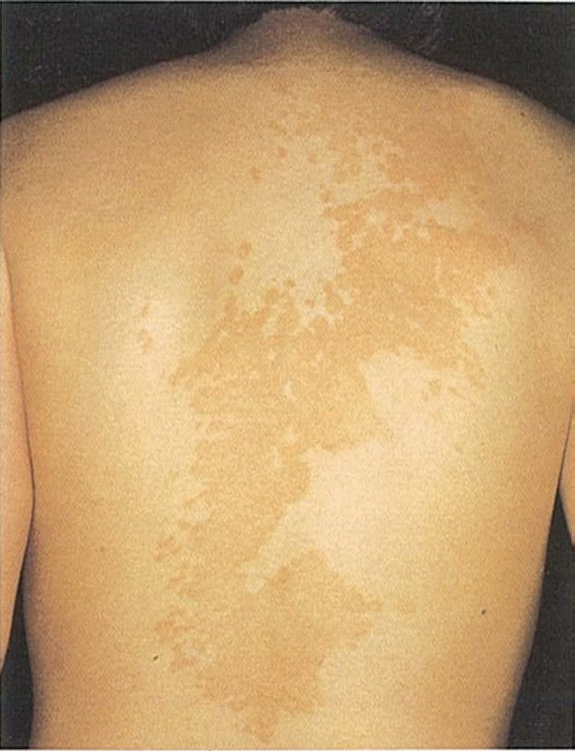
| 選択肢 | 解説 |
|---|---|
| ◯ ａ 抗真菌薬 | ①高温多湿の季節（6月下旬〜8月）に出現・拡大、②若年男性の体幹（前胸部・背部・上腕という皮脂の多い部位）、③自覚症状に乏しい、④写真では境界のやや不明瞭な淡褐色〜色素脱失斑が融合して地図状に広がり、細かい粃糠様鱗屑を伴う——癜風〈でんぷう、tinea versicolor〉である。常在真菌マラセチア〈Malassezia furfur〉が皮脂を栄養に角層で増殖したもので、治療はイミダゾール系抗真菌薬の外用である。 |
| ｂ 抗ウイルス薬 | ウイルス性発疹症（帯状疱疹・単純疱疹）は水疱を形成し疼痛を伴うのが普通である。2か月かけて無症候の色調変化が拡大する経過はウイルス性ではない。 |
| ｃ 抗ヒスタミン薬 | 抗ヒスタミン外用薬は瘙痒に対する対症療法である。本例は「自覚症状はない」と明記されており、痒みを抑える薬を使う理由がない。そもそも原因（真菌）を放置すれば病変は拡大し続ける。 |
| ｄ 非ステロイド性抗炎症薬 | NSAIDs外用薬は消炎鎮痛が目的で、疼痛も炎症所見も乏しい本例には適応がない。かえって接触皮膚炎（光接触皮膚炎を含む）の原因になり得る。 |
| ｅ 副腎皮質ステロイド | ステロイド外用は局所免疫を抑制するため、真菌感染をむしろ増悪させる。癜風・白癬・カンジダにステロイドを塗ると一時的に紅斑が薄れて「効いたように見える」が、菌は増殖し病変は拡大する（異型白癬と同じ機序）。鱗屑を伴う病変にステロイドを塗る前にKOHを取るのが原則である。 |
| 疾患 | 特徴 |
|---|---|
| 癜 風 | 体幹の淡褐色斑・脱色素斑＋粃糠様鱗屑。無症候。夏季。KOHで菌糸＋胞子集塊 |
| マラセチア毛包炎 | 体幹・上腕の毛包一致性の丘疹・膿疱。痤瘡と紛らわしいが面皰がない |
| 脂漏性皮膚炎 | 頭部・眉間・鼻唇溝の紅斑と黄色調の鱗屑。マラセチアが増悪因子 |
| 尋常性白斑 | 完全な脱色素斑（乳白色）。鱗屑なし。Wood灯で境界が鮮明化。メラノサイトが消失（自己免疫） |
| 単純性粃糠疹〈はたけ〉 | 小児の顔面の淡い脱色素斑＋細かい鱗屑。乾燥・日焼けで目立つ。自然軽快 |
| 炎症後色素脱失 | 先行する炎症（湿疹・乾癬）の部位に一致 |
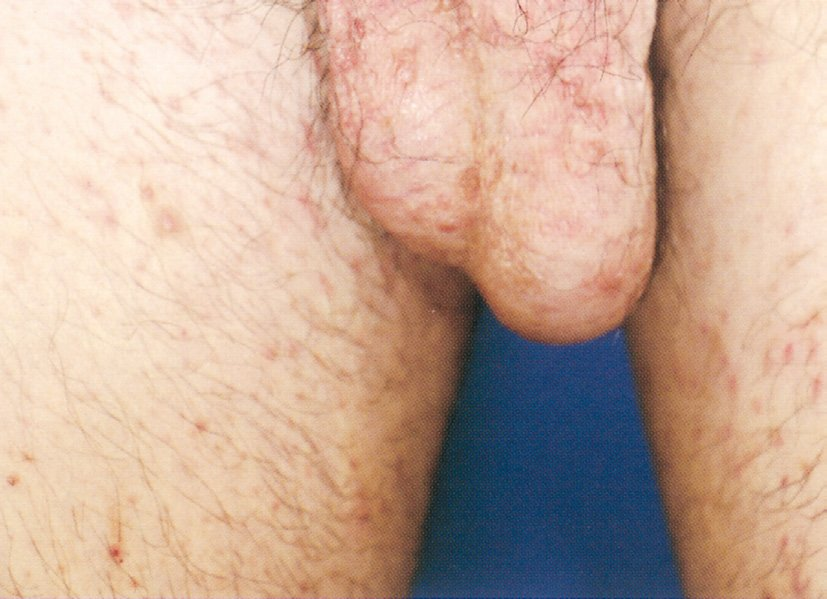
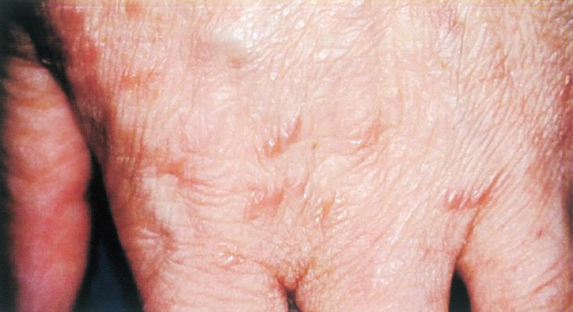
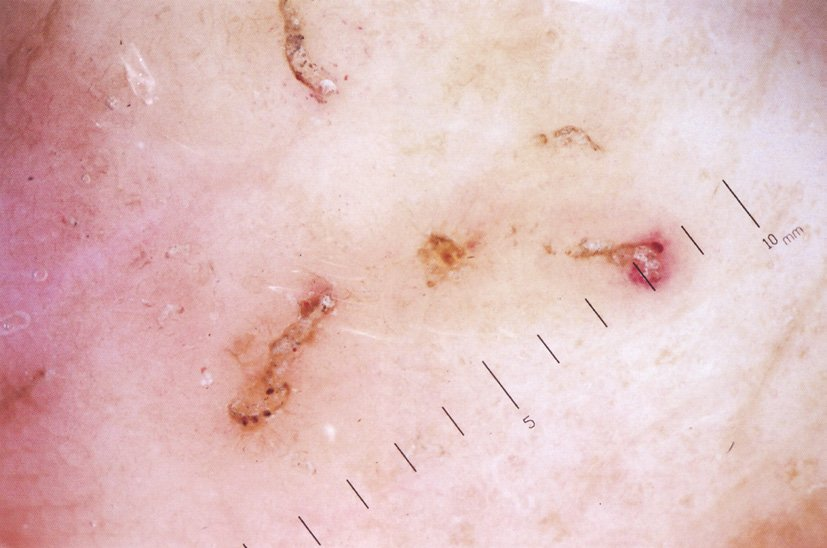
| 選択肢 | 解説 |
|---|---|
| ａ 保健所に届け出る。 | 疥癬は感染症法上の届出対象疾患ではない。保健所への届出義務はなく、集団発生時に施設が保健所へ相談・報告することはあっても医師の法的届出とは別である。 |
| ｂ 衣類を煮沸消毒する。 | ヒゼンダニはヒトの体表を離れると数時間〜長くても数日で死滅し、乾燥と50℃10分の加熱に弱い。通常疥癬では日常的な洗濯・乾燥で十分であり、煮沸消毒までは不要である。角化型疥癬では50℃以上10分の熱処理やビニール袋密閉が推奨されるが、本例は通常疥癬。 |
| ｃ 個室管理の上で治療を開始する。 | 個室隔離が必要なのは角化型（ノルウェー）疥癬だけである。通常疥癬は寄生虫数が数十匹と少なく、長時間の直接接触がなければ伝播しないため、個室管理は不要である。本例は鱗屑を伴う丘疹の多発であって、牡蠣殻状の厚い角質増殖はない。 |
| ｄ 皮疹が完全に治癒するまでは就業を禁止する。 | 治療を開始すれば感染力は速やかに低下する。疥癬の皮疹（とくに疥癬結節や瘙痒）は虫体が死滅した後も数週間〜数か月残ることがあり（治療後瘙痒症）、これを待って就業禁止にするのは過剰である。法的な就業制限の対象疾患でもない。 |
| ◯ ｅ 勤務先の施設の職員と入居者に問診と診察を行う。 | 本例は高齢者施設の介護職員で、3か月前から皮疹があり、ステロイド外用で改善しないまま拡大している。すなわち感染源（施設内の未診断例）と感染拡大先（職員・入居者）が同時に存在する可能性が高い。疥癬対策の要は「集団としてとらえて接触者を洗い出し、同時期に一斉治療する」ことである。1人ずつ順に治療すると未治療者から再感染し、施設内で無限に循環する。 |
| 薬剤 | 用法 | 要点 |
|---|---|---|
| イベルメクチン | 200μg/kg 経口・空腹時に単回。1週後に再投与 | 卵には効かない→孵化を待って2回目が必須。角化型では複数回 |
| フェノトリンローション | 首から下の全身に塗布、12時間後に洗い流す。1週間隔で2回 | 日本で疥癬に保険適用のある唯一の外用ピレスロイド |
| イオウ含有外用薬 | 連日全身塗布を数日〜1週 | 古典的だが有効・安価。臭いと刺激が難点 |
| クロタミトン | 連日全身塗布 | 殺虫作用は弱め。止痒作用あり |
| 安息香酸ベンジル | 外用 | 刺激が強く小児には不向き |
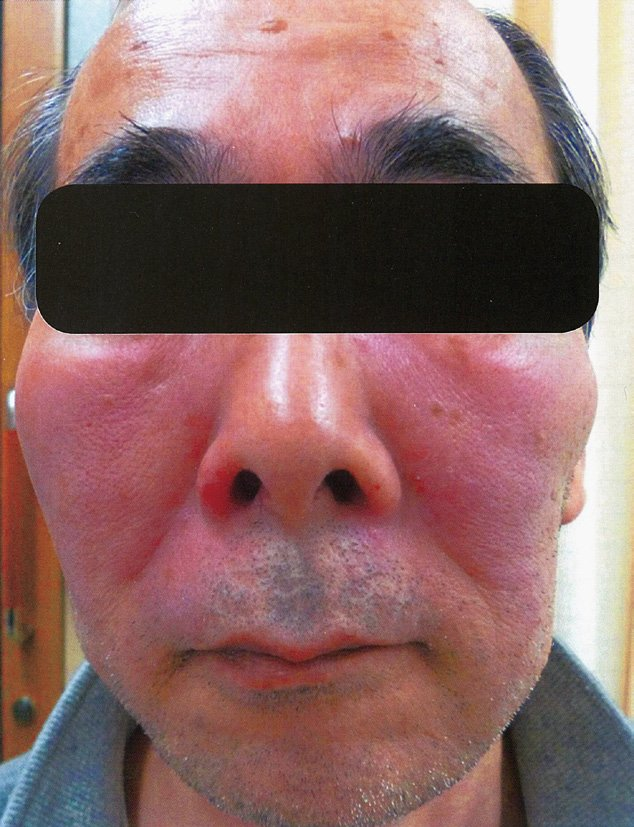
| 選択肢 | 解説 |
|---|---|
| ａ 抗真菌薬 | 顔面白癬・カンジダ症は鱗屑を伴い、発熱や強い圧痛は伴わない。3日で急性に発赤・熱感・圧痛と発熱を来す経過は真菌症らしくない。 |
| ｂ 抗ウイルス薬 | 顔面のウイルス感染で問題になるのは三叉神経領域の帯状疱疹だが、片側性の集簇性小水疱が必発である。本例は両頰部で水疱がない。 |
| ｃ 副腎皮質ステロイド | 両頰部の紅斑からSLEの蝶形紅斑を連想させる作りになっているが、本文は「日光過敏なし・関節痛なし・筋肉痛なし・眼球結膜に異常なし」と膠原病を示唆する所見を丁寧に消している。さらにSLEの蝶形紅斑は熱感・圧痛を伴わず、発熱があっても「押さえると痛い」局所所見にはならない。細菌感染にステロイドを投与すれば感染を増悪させる。 |
| ◯ ｄ ペニシリン系抗菌薬 | ①3日という急性経過、②発熱、③顔面の発赤に熱感と圧痛を伴う、④糖尿病という易感染宿主——丹毒（あるいは顔面の蜂窩織炎）である。丹毒の起炎菌はA群β溶血性連鎖球菌で、溶連菌にはペニシリン耐性がほぼ知られていないため、ペニシリン系抗菌薬が第一選択となる。 |
| ｅ 非ステロイド性抗炎症薬〈NSAIDs〉 | NSAIDsは解熱鎮痛の対症療法にすぎず、細菌感染の原因治療にならない。むしろ壊死性筋膜炎への進展を解熱・鎮痛によってマスクする危険が指摘されている。 |
| 病態 | 想定起炎菌 | 第一選択 |
|---|---|---|
| 丹 毒 | A群β溶連菌 | ペニシリン系（ベンジルペニシリン、アモキシシリン） |
| 蜂窩織炎（MSSA想定） | 黄色ブドウ球菌・溶連菌 | セファゾリン（第1世代セフェム） |
| 蜂窩織炎（MRSAリスクあり） | MRSA | バンコマイシン・リネゾリド・ダプトマイシン |
| 伝染性膿痂疹 | 黄色ブドウ球菌・溶連菌 | セフェム系外用±内服 |
| 壊死性筋膜炎 | A群β溶連菌・嫌気性菌・混合 | 緊急デブリドマン＋広域（カルバペネム等）＋クリンダマイシン（毒素産生抑制） |
| 糖尿病性足感染 | 混合（好気＋嫌気） | 広域β-ラクタム＋創部管理・血糖是正 |
| 番号 | 通称 | 疾患 | 潜伏部位 |
|---|---|---|---|
| HHV-1 | 単純ヘルペス1型 | 口唇ヘルペス、ヘルペス性歯肉口内炎、カポジ水痘様発疹症、単純ヘルペス脳炎 | 三叉神経節 |
| HHV-2 | 単純ヘルペス2型 | 性器ヘルペス、新生児ヘルペス | 仙骨神経節 |
| HHV-3 | 水痘・帯状疱疹ウイルス | 水痘（初感染）、帯状疱疹（再活性化） | 後根神経節 |
| HHV-4 | EBウイルス | 伝染性単核症、Burkittリンパ腫、上咽頭癌、種痘様水疱症 | B細胞 |
| HHV-5 | サイトメガロウイルス | 先天性CMV感染症、間質性肺炎、網膜炎、腸炎（免疫不全） | 単球・骨髄 |
| HHV-6 | — | 突発性発疹、DIHS（薬剤性過敏症症候群）での再活性化 | 単球・T細胞 |
| HHV-7 | — | 突発性発疹（2回目のことがある） | T細胞 |
| HHV-8 | KSHV | Kaposi肉腫、原発性滲出性リンパ腫 | B細胞 |
| 選択肢 | 解説 |
|---|---|
| ａ 手足口病 | 手足口病はコクサッキーウイルスA6・A16、エンテロウイルス71によるピコルナウイルス科の感染症である。手掌・足底・口腔に水疱性発疹を生じ、EV71は無菌性髄膜炎・脳炎を合併し得る。 |
| ｂ 伝染性紅斑 | 伝染性紅斑〈りんご病〉はヒトパルボウイルスB19（パルボウイルス科）による。両頰の平手打ち様紅斑と四肢のレース状紅斑。妊婦感染で胎児水腫、溶血性貧血患者でaplastic crisisを起こす。 |
| ◯ ｃ 突発性発疹 | 突発性発疹〈exanthem subitum〉はヒトヘルペスウイルス6型〈HHV-6〉（一部はHHV-7）による。生後6か月〜2歳に好発し、3〜4日間の高熱の後、解熱とともに体幹から淡紅色の小紅斑が出現するのが定型である。「熱が下がってから発疹が出る」順序が診断の鍵で、発熱時に熱性痙攣を起こすことがある。 |
| ｄ 伝染性軟属腫 | 伝染性軟属腫〈水いぼ〉は伝染性軟属腫ウイルス（ポックスウイルス科）による。中心臍窩をもつ光沢のあるドーム状小丘疹で、圧出すると白い粥状物（軟属腫小体）が出る。 |
| ｅ 尖圭コンジローマ | 尖圭コンジローマはヒト乳頭腫ウイルス〈HPV〉6型・11型（パピローマウイルス科）による性感染症である。陰部に乳頭状・鶏冠状の腫瘤を形成する。 |
| 疾患 | ウイルス | 発熱と発疹の関係 | 皮疹の特徴 |
|---|---|---|---|
| 突発性発疹 | HHV-6・7 | 解熱してから発疹 | 体幹主体の淡紅色小紅斑。機嫌はよい |
| 麻 疹 | 麻疹ウイルス | いったん解熱後に再発熱して発疹（二峰性） | Koplik斑→耳後部から下降する融合性紅斑→色素沈着 |
| 風 疹 | 風疹ウイルス | 発熱と同時 | 淡紅色小紅斑、耳後部・後頸部リンパ節腫脹。3日で消退 |
| 伝染性紅斑 | パルボウイルスB19 | 発疹が出る頃には解熱・全身状態良好 | 両頰の平手打ち様紅斑＋四肢のレース状紅斑 |
| 水 痘 | VZV（HHV-3） | 発熱と同時〜やや先行 | 紅斑・水疱・膿疱・痂皮が同時に混在（多様性） |
| 手足口病 | コクサッキーA・EV71 | 微熱を伴う | 手掌・足底・口腔の水疱。爪甲脱落を後遺することあり |
| 選択肢 | 解説 |
|---|---|
| ◯ ａ 伝染性膿痂疹 | 水疱性膿痂疹は、黄色ブドウ球菌が局所で産生した表皮剝脱毒素〈ET〉がデスモグレイン1〈Dsg1〉を分解し、顆粒層に弛緩性水疱を作る。乳幼児の夏季に多く、掻破した手を介して自家接種で広がる（＝とびひ）。同じ毒素が血行性に全身へ回るとSSSSになる——選択肢にSSSSがなければ伝染性膿痂疹が答えである。 |
| ｂ 壊疽性膿皮症 | 壊疽性膿皮症〈pyoderma gangrenosum〉は好中球性皮膚症で、名前に反して感染症ではない。辺縁が穿掘性・堤防状に隆起する有痛性潰瘍を作り、潰瘍性大腸炎・Crohn病・関節リウマチ・骨髄異形成症候群に合併する。デブリドマンで悪化する（pathergy）ため、治療はステロイド・免疫抑制薬・生物学的製剤である。 |
| ｃ 尋常性痤瘡 | 尋常性痤瘡〈にきび〉は、毛包漏斗部の角化異常による面皰形成に、皮脂の増加と Cutibacterium acnes（旧 Propionibacterium acnes）の増殖・炎症が加わって生じる。黄色ブドウ球菌の毒素は関与しない。 |
| ｄ 皮膚腺病 | 皮膚腺病〈scrofuloderma〉は、頸部リンパ節結核などの深部結核病巣が皮膚へ穿破して瘻孔・潰瘍を形成した皮膚結核である。起炎菌は結核菌。 |
| ｅ 丹 毒 | 丹毒はA群β溶連菌が真皮浅層とリンパ管に侵入して起こす化膿性炎で、黄色ブドウ球菌でも毒素性でもない。 |
| 疾患 | 壊れる分子 | 機序 | 裂隙 | 粘膜疹 |
|---|---|---|---|---|
| 水疱性膿痂疹 | Dsg1 | ETによる分解（局所） | 顆粒層 | なし |
| SSSS | Dsg1 | ETによる分解（全身・血行性） | 顆粒層 | なし |
| 落葉状天疱瘡 | Dsg1 | 抗Dsg1自己抗体 | 顆粒層 | なし |
| 尋常性天疱瘡 | Dsg3（±Dsg1） | 抗Dsg3自己抗体 | 基底層直上 | あり（口腔で初発） |
| 水疱性類天疱瘡 | BP180・BP230（ヘミデスモソーム） | 抗基底膜部抗体 | 表皮下（緊満性水疱） | 少ない |
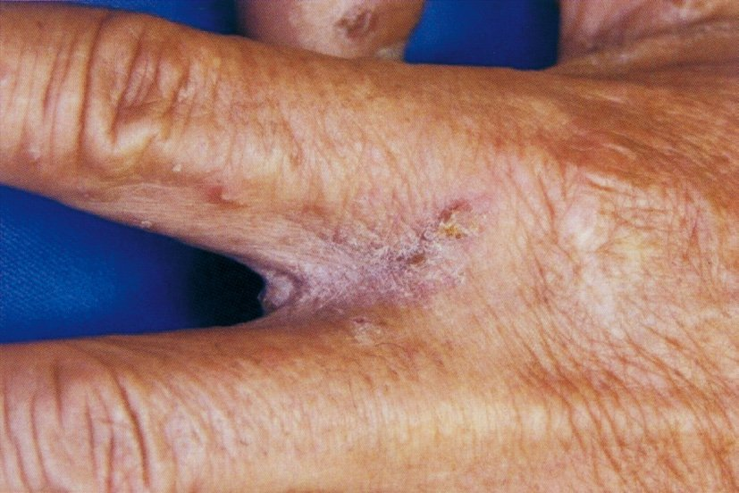
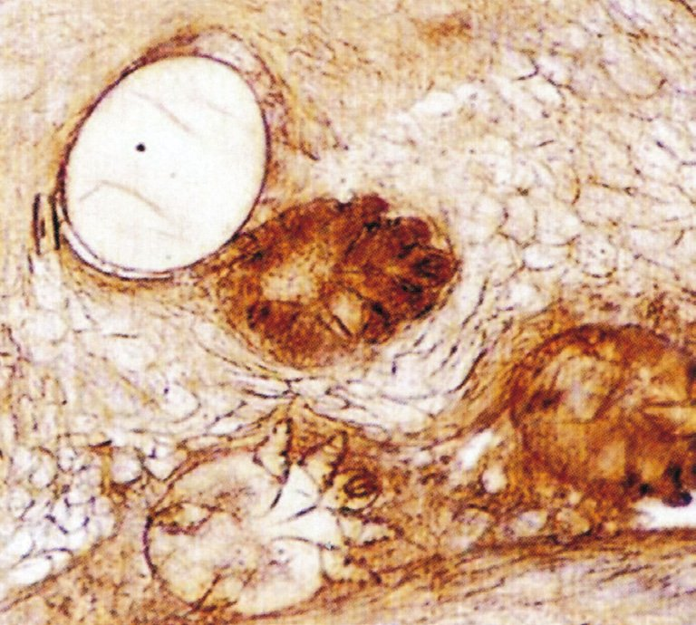
| 選択肢 | 解説 |
|---|---|
| ａ 手術を延期する。 | 疥癬は治療可能であり、手術と並行して治療できる。胃癌の手術を疥癬のために延期すれば原疾患の予後を損なう——感染対策を理由に必要な治療を遅らせないのが原則である。 |
| ｂ 病室を閉鎖する。 | 通常疥癬は寄生虫数が少なく、長時間の直接接触がなければ伝播しない。病室閉鎖は角化型疥癬でも通常は行わず、当該患者の個室管理で対応する。過剰な対応である。 |
| ｃ 衣類を熱湯消毒する。 | ヒゼンダニは宿主を離れると数時間〜数日で死滅し、通常の洗濯・乾燥で十分である。熱湯消毒（50℃10分以上）が推奨されるのは虫体数が桁違いに多い角化型疥癬の場合で、本例のような通常疥癬では不要である。 |
| ｄ 病室に殺虫剤を散布する。 | ヒゼンダニはヒトの皮膚の角層内にしか棲めず、環境中で繁殖しない。環境への殺虫剤散布は無意味であり、入院患者への曝露という害だけが残る。 |
| ◯ ｅ 接触した職員の皮疹の有無を確認する。 | 1か月にわたり診断されないまま経過しており、入院中に多数の医療者が身体接触（清拭・移乗・処置）を行っている可能性が高い。疥癬の院内対応の核は、接触者を洗い出して問診・診察し、感染者を同時期に一斉治療して伝播の輪を断つことである。環境ではなく「人」を追うのが正しい。 |
| 感染経路 | 代表疾患 | 必要な予防策 |
|---|---|---|
| 接触（通常疥癬） | 通常疥癬 | 標準予防策で足りる。個室不要 |
| 接触（強い） | 角化型疥癬、MRSA、CD腸炎、流行性角結膜炎 | 個室・ガウン・手袋 |
| 飛沫 | インフルエンザ、風疹、流行性耳下腺炎、百日咳 | サージカルマスク・個室（またはコホート） |
| 空気 | 結核、麻疹、水痘 | 陰圧個室・N95マスク |
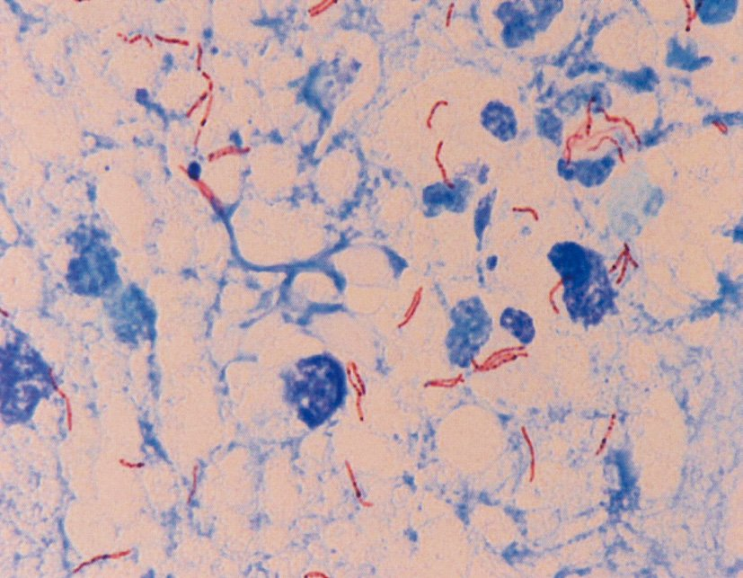
| 選択肢 | 解説 |
|---|---|
| ａ 皮膚腺病 | 皮膚腺病〈scrofuloderma〉は、頸部リンパ節結核や骨・関節結核が皮膚へ穿破して瘻孔・潰瘍を作る皮膚結核である。本例はPCRで結核菌が陰性、胸部CTで肺野に異常なし、表在リンパ節も触知しない——結核が三重に否定されている。 |
| ｂ 尋常性狼瘡 | 尋常性狼瘡も皮膚結核で、顔面に数年〜数十年かけて緩徐に拡大する褐色の局面（リンゴゼリー様）を作る。1か月の経過・手背の潰瘍性結節という所見に合わず、結核菌PCRも陰性である。 |
| ｃ アスペルギルス症 | アスペルギルスは真菌であり、Sabouraud寒天培地（真菌用培地）での培養が陰性である本例には合わない。また皮膚アスペルギルス症は好中球減少患者などの重篤な易感染宿主に生じる。 |
| ｄ スポロトリコーシス | スポロトリコーシスはSporothrix schenckii による深在性真菌症で、土壌・植物（バラの棘・水苔）による外傷が契機となる。真菌なのでSabouraud培地で培養陽性になるはずだが、本例は陰性である。また曝露歴が「熱帯魚の飼育」＝水系であって土壌ではない。 |
| ◯ ｅ 非結核性〈非定型〉抗酸菌症 | ①熱帯魚の飼育＝水系曝露、②手背という体温の低い四肢末梢、③1か月の緩徐な経過で発熱なし、④結核菌PCR陰性（＝結核ではない）、⑤Sabouraud培地陰性（＝真菌ではない）、⑥Ziehl-Neelsen染色で抗酸菌陽性——Mycobacterium marinum による皮膚非結核性抗酸菌症である。「抗酸菌はいるが結核菌ではない」＝非結核性抗酸菌という消去法がそのまま診断になる。 |
| 疾患 | 菌 | 臨床像 | 手がかり |
|---|---|---|---|
| M. marinum 感染症 | M. marinum（NTM） | 四肢末梢の無痛性結節・潰瘍。上行性に多発 | 水槽・水族館・魚。30℃培養 |
| 尋常性狼瘡 | 結核菌 | 顔面の褐色局面が年単位で拡大。中心瘢痕化 | 硝子圧法でリンゴゼリー様 |
| 皮膚腺病 | 結核菌 | 深部病巣が皮膚へ穿破。瘻孔・潰瘍 | 頸部リンパ節結核が原発 |
| 結核疹（Bazin硬結性紅斑） | 結核菌（アレルギー反応） | 下腿の皮下硬結・潰瘍 | 病変に菌はいない。ツ反強陽性 |
| Hansen病（らい） | M. leprae | 知覚脱失を伴う皮疹・末梢神経肥厚 | 菌は培養不能。生検・PCR |
| Buruli潰瘍 | M. ulcerans | 広範な無痛性潰瘍 | 熱帯・亜熱帯 |
| 選択肢 | 解説 |
|---|---|
| ◯ ａ セファゾリン | セファゾリンは第1世代セファロスポリンで、グラム陽性球菌（MSSA・連鎖球菌）に対する抗菌活性が強く、MSSA感染症の第一選択である。「感受性がある最も狭域の薬を選ぶ」というのが抗菌薬選択の原則で、MSSAと分かっているならバンコマイシンではなくセファゾリン（またはABPC/SBT等）を選ぶ。MSSA菌血症ではバンコマイシンよりセファゾリンの方が予後がよいことが知られている。 |
| ｂ バンコマイシン | バンコマイシンは MRSA に対する標準薬である。MSSAと判明している症例に使うのは「広すぎる」選択で、耐性菌の選択圧・腎毒性・TDMの手間という不利益だけが増える。MSSAに対する殺菌力もβ-ラクタムに劣る。正答率41％の主因はここを取り違えたためと考えられる。 |
| ｃ アジスロマイシン | アジスロマイシンはマクロライド系で、非定型肺炎（マイコプラズマ・クラミジア・レジオネラ）や性感染症に用いる。黄色ブドウ球菌にはマクロライド耐性が多く、第一選択にならない。 |
| ｄ クリンダマイシン | クリンダマイシンはリンコマイシン系で、グラム陽性球菌と嫌気性菌をカバーする。壊死性軟部組織感染症では毒素産生を抑制する目的でβ-ラクタムに併用されるが、単純なMSSA蜂窩織炎の第一選択ではない。β-ラクタムアレルギー時の代替としての位置づけである。 |
| ｅ テトラサイクリン | テトラサイクリン系はリケッチア・クラミジア・マイコプラズマ・一部の市中型MRSAなどに用いる。MSSAに対する殺菌力はβ-ラクタムに劣り、重症の軟部組織感染症の第一選択にはならない。 |
| 薬剤 | 主な標的 | 使いどころ |
|---|---|---|
| ペニシリンG／アモキシシリン | A群β溶連菌 | 丹 毒 |
| セファゾリン（第1世代セフェム） | MSSA・連鎖球菌 | 蜂窩織炎（MSSA）、術後創感染 |
| アンピシリン/スルバクタム | MSSA・嫌気性菌・口腔内細菌 | 咬傷、糖尿病性足感染 |
| バンコマイシン | MRSA | MRSA感染症、MRSAリスクのある重症例の初期治療 |
| クリンダマイシン | グラム陽性菌・嫌気性菌 | 壊死性筋膜炎での毒素産生抑制（β-ラクタムに併用）、β-ラクタムアレルギー |
| ミノサイクリン | 市中型MRSA・非結核性抗酸菌 | M. marinum感染症 |
| 起炎微生物 | 代表疾患 |
|---|---|
| A群β溶連菌 | 丹毒、痂皮性膿痂疹、蜂窩織炎、壊死性筋膜炎、猩紅熱 |
| 黄色ブドウ球菌 | せつ・癰、毛包炎、瘭疽、水疱性膿痂疹、SSSS、TSS |
| 結核菌 | 尋常性狼瘡、皮膚腺病、結核疹（Bazin硬結性紅斑） |
| 非結核性抗酸菌 | M. marinum感染症（水槽・水族館） |
| 白癬菌（真菌） | 体部・股部・足・爪白癬、頭部白癬、Celsus禿瘡 |
| マラセチア（真菌） | 癜風、マラセチア毛包炎、脂漏性皮膚炎の増悪 |
| カンジダ（真菌） | 間擦疹、指間びらん症、爪囲炎、乳児寄生菌性紅斑 |
| ヒゼンダニ | 疥 癬 |
| HPV | 尋常性疣贅、扁平疣贅、尖圭コンジローマ |
| VZV（HHV-3） | 水痘、帯状疱疹 |
| HSV（HHV-1/2） | 単純疱疹、カポジ水痘様発疹症 |
| ポックスウイルス | 伝染性軟属腫（水いぼ） |
| なし（無菌・非感染） | 掌蹠膿疱症、膿疱性乾癬、壊疽性膿皮症、Behçet病の皮疹 |
| 選択肢 | 解説 |
|---|---|
| ◯ ａ 丹 毒 | 丹毒はA群β溶血性連鎖球菌〈Streptococcus pyogenes〉が真皮浅層と浅在リンパ管に感染して生じる。境界明瞭な鮮紅色の浮腫性紅斑が顔面・下腿に生じ、悪寒戦慄を伴う発熱が先行する。治療はペニシリン系抗菌薬。 |
| ｂ 皮膚腺病 | 皮膚腺病〈scrofuloderma〉は結核菌による皮膚結核である。頸部リンパ節結核などの深部病巣が皮膚へ穿破し、瘻孔と潰瘍を形成する。 |
| ｃ 掌蹠膿疱症 | 掌蹠膿疱症は手掌・足底に無菌性膿疱を反復する慢性疾患で、扁桃・歯性の病巣感染や喫煙が増悪因子だが、膿疱そのものは無菌である。「病巣感染に溶連菌が関与し得る」ことと「溶連菌感染症である」ことは別である。 |
| ｄ 膿疱性乾癬 | 膿疱性乾癬は発熱を伴って全身の紅斑上に無菌性膿疱が多発する乾癬の重症型（指定難病）で、感染症ではない。 |
| ｅ Celsus禿瘡 | Celsus禿瘡は深在性の頭部白癬で、起炎菌は白癬菌（皮膚糸状菌）＝真菌である。膿疱と排膿があるので細菌感染に見えるが、細菌培養は陰性で治療は抗真菌薬の内服である。 |
| 続発症 | 先行感染 | 時期 | 機序・要点 |
|---|---|---|---|
| 急性糸球体腎炎 | 咽頭炎・皮膚感染のどちらからも | 1〜3週後 | 免疫複合体沈着。血尿・浮腫・高血圧・補体C3低下 |
| リウマチ熱 | 咽頭炎のみ（皮膚感染からは起こらない） | 2〜4週後 | Jones基準：心炎・多関節炎・舞踏病・輪状紅斑・皮下結節 |
| 猩紅熱 | 咽頭炎 | 同時 | 発赤毒による全身点状紅斑・苺舌・口囲蒼白・落屑 |
| 劇症型溶連菌感染症〈STSS〉 | 軟部組織感染 | 数時間〜数日 | 壊死性筋膜炎＋多臓器不全。致死率30％。緊急デブリドマン＋ペニシリン＋クリンダマイシン |
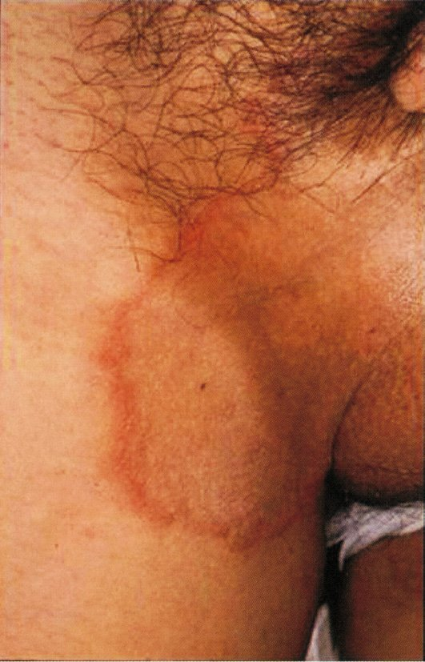
| 選択肢 | 解説 |
|---|---|
| ａ 培養法 | 真菌培養（Sabouraud培地）は菌種の同定に有用だが、白癬菌は発育が遅く2〜4週を要する。「治療を開始するための迅速な検査」にはならない。 |
| ｂ PCR法 | PCR法は菌種同定の精度が高いが、白癬の日常診療で標準的に用いられる検査ではなく、外注すれば結果は数日先になる。迅速性でKOHに劣る。 |
| ｃ 皮膚生検 | 皮膚生検は侵襲があり、標本作製に数日かかる。PAS染色やGrocott染色で菌要素を証明できるが、KOHで済む病変にわざわざ行うものではない。 |
| ｄ トリコフィチン反応 | トリコフィチン反応は白癬菌抗原に対する遅延型皮内反応で、判定に48時間を要する。また既感作の有無を見るだけで、現在その病変に菌がいるかどうかは分からない。現在は白癬疹の診断補助程度の位置づけである。 |
| ◯ ｅ 苛性カリ〈KOH〉直接鏡検法 | 中心治癒＋辺縁拡大の環状紅斑が鼠径部にあり瘙痒を伴う＝股部白癬〈いんきんたむし〉である。KOH直接鏡検は病変辺縁の鱗屑を採取して20％KOHを滴下し、加温して鏡検するだけで、数分で分節菌糸を確認できる。無侵襲・安価・その場で結果が出て即座に抗真菌薬を開始できる——「迅速な検査法」の要件をすべて満たす。 |
| 検査 | 所要時間 | 分かること |
|---|---|---|
| KOH直接鏡検 | 数分（その場） | 菌要素の有無＝治療開始の可否 |
| Tzanck試験 | 数分（その場） | ウイルス性巨細胞（ヘルペス）・棘融解細胞（天疱瘡） |
| ダーモスコピー | その場 | 色素性病変の良悪、疥癬トンネル、脱毛の性状 |
| Wood灯 | その場 | M. canis（黄緑）、紅色陰癬（サンゴ色）、白斑の境界 |
| Gram染色 | 十数分 | 細菌の形態とGram性 |
| 皮膚生検 | 数日 | 組織診断（確定診断） |
| パッチテスト | 48・72時間後に判定 | アレルギー性接触皮膚炎の原因物質 |
| 真菌培養 | 2〜4週 | 菌種同定 |
| 抗酸菌培養 | 数週〜2か月 | 抗酸菌の同定（M. marinumは30℃） |
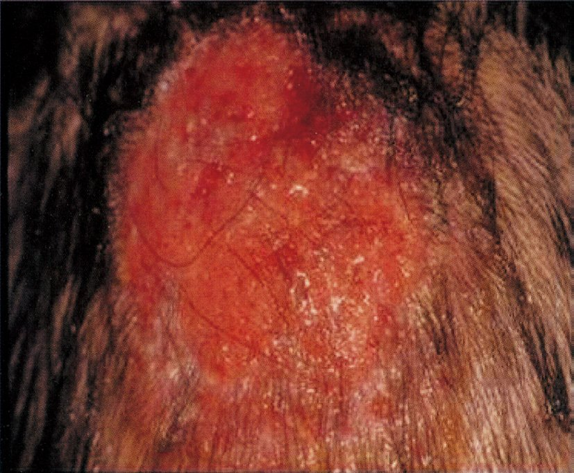
| 選択肢 | 解説 |
|---|---|
| ａ 丹 毒 | 丹毒は悪寒戦慄を伴う発熱と、境界明瞭で熱感・圧痛の強い浮腫性紅斑が数日で急速に拡大する。6か月かけて進行し脱毛を来す経過とは全く異なる。 |
| ｂ 尋常性乾癬 | 尋常性乾癬の頭部病変は、境界明瞭な紅斑に厚い銀白色の鱗屑が固着し、生え際を越えて広がるのが特徴である。膿疱は作らず、脱毛も通常は来さない。爪の点状陥凹・Auspitz現象・Köbner現象を伴う。 |
| ◯ ｃ Celsus禿瘡 | ①6か月の緩徐な経過、②痒みが先行、③ステロイド外用で増悪、④膿疱の出現と脱毛、⑤細菌培養が陰性——Celsus禿瘡〈深在性頭部白癬〉である。膿疱・排膿があるのに細菌培養が陰性という所見が決め手で、これは膿疱が細菌感染ではなく白癬菌に対する強いアレルギー反応（化膿性肉芽腫）であることを示す。診断は抜毛のKOH直接鏡検、治療は抗真菌薬の内服。 |
| ｄ 尋常性天疱瘡 | 尋常性天疱瘡は抗Dsg3抗体による自己免疫性水疱症で、口腔粘膜のびらんで初発することが多く、弛緩性水疱とびらん、Nikolsky現象陽性を示す。膿疱を作って脱毛斑となる病態ではない。 |
| ｅ 伝染性膿痂疹 | 伝染性膿痂疹は数日単位で拡大する急性の細菌感染症である。本例は細菌培養が陰性であり、6か月の経過も合わない。また膿痂疹は脱毛を残さない。 |
| 疾患 | 皮疹 | 脱毛 | 決め手 |
|---|---|---|---|
| Celsus禿瘡 | 膿疱・痂皮・排膿・圧痛 | あり（易抜毛性）。放置で瘢痕性 | KOHで毛内に菌要素。細菌培養陰性 |
| 頭部白癬（浅在性） | 鱗屑・断毛 | あり | KOH陽性 |
| 尋常性乾癬 | 厚い銀白色鱗屑の固着した紅斑。生え際を越える | なし | 爪の点状陥凹・Auspitz現象 |
| 脂漏性皮膚炎 | 黄色調の鱗屑（ふけ）・軽い紅斑 | 目立たない | 眉間・鼻唇溝にも。マラセチア関与 |
| 円形脱毛症 | なし（皮膚は正常） | 境界明瞭な円形 | 感嘆符毛・爪の点状陥凹。自己免疫 |
| 頭部の毛包炎・せつ | 膿疱・排膿 | 一過性 | 細菌培養陽性。抗菌薬が有効 |
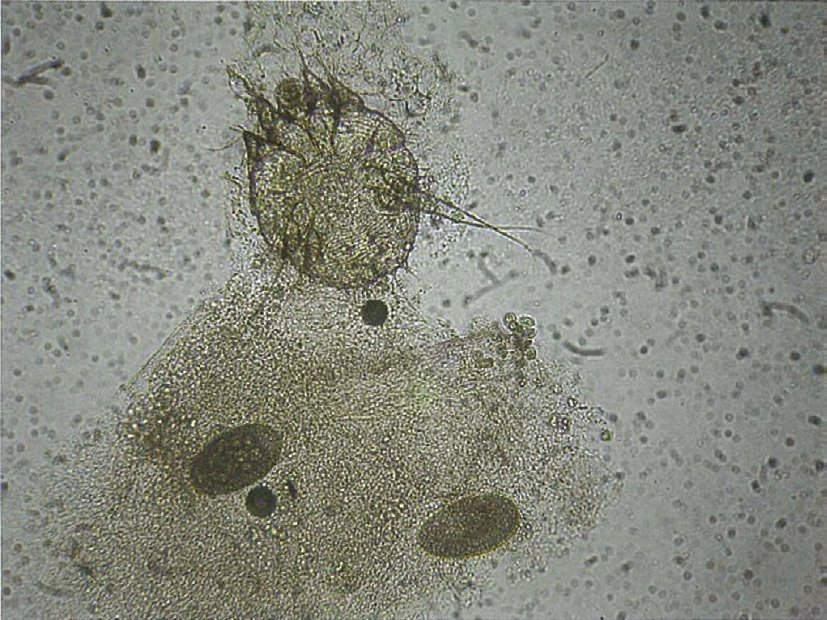
| 選択肢 | 解説 |
|---|---|
| ◯ ａ 疥 癬 | ①2か月前からの全身の痒み（初感染の潜伏期に一致）、②夜間に増強して眠れない、③腋窩・乳房下・臍周囲・陰部という疥癬の好発部位に赤い丘疹、④看護師という職業（患者との身体接触）、⑤顕微鏡写真でヒゼンダニの虫体——疥癬である。「ネコを飼っている」は他疾患へ誘導するための記載で、ヒト疥癬虫はヒトからヒトへ伝播する（動物疥癬はヒトでは一過性で自然消退する）。 |
| ｂ マダニ症 | マダニ刺症は野外活動後に露出部（頭部・頸部・下肢など）へ1匹が咬着し、数mm〜1cmの虫体が皮膚に付着したまま見える。全身に丘疹が多発して2か月続く病態ではない。重症熱性血小板減少症候群〈SFTS〉や日本紅斑熱の媒介として重要。 |
| ｃ ネコノミ症 | ネコノミ刺症は、露出しにくい下腿・大腿など下半身を中心に強い痒みを伴う紅斑・水疱が「複数個ずつまとまって」出現する。ネコの飼育歴に引きずられやすい選択肢だが、陰部・臍周囲・腋窩といった疥癬の好発部位に丘疹が多発する分布とは異なり、顕微鏡でヒゼンダニが見えている時点で否定される。 |
| ｄ ケジラミ症 | ケジラミ症は主に陰毛部に寄生し、陰部の瘙痒と下着に付着する黒色の点状物（糞）、毛に固着した卵（虫卵）が特徴である。性感染症として扱う。全身の丘疹は生じない。 |
| ｅ コロモジラミ症 | コロモジラミは衣類の縫い目に産卵・生息し、体幹を中心に瘙痒と掻破痕、慢性化すると色素沈着（浮浪者皮膚）を来す。衛生状態の悪い環境で問題となり、発疹チフス・回帰熱・塹壕熱を媒介する。虫体は衣類にいるので、皮膚から採取した検体には出てこない。 |
| 寄生虫 | 部位 | 特徴 | 治療 |
|---|---|---|---|
| ヒゼンダニ（疥癬） | 指間・腋窩・臍周囲・陰部（顔面は避ける） | 夜間増強する激痛に近い瘙痒。トンネル・疥癬結節 | イベルメクチン内服・フェノトリン外用 |
| ケジラミ | 陰毛部（まれに腋毛・睫毛） | 性感染症。下着に黒色点、毛に固着した卵 | フェノトリンパウダー・剃毛 |
| コロモジラミ | 体幹（虫は衣類の縫い目） | 衛生不良環境。発疹チフス・回帰熱を媒介 | 衣類の熱処理・交換 |
| アタマジラミ | 頭髪 | 小児の集団発生。毛幹に固着した卵（ふけと違い取れない） | フェノトリンシャンプー |
| マダニ | 露出部に1匹咬着 | SFTS・日本紅斑熱・ライム病を媒介。無理に引き抜かず口器ごと切除 | 外科的除去 |
| ネコノミ | 下腿など下半身 | 数個ずつまとまった瘙痒性紅斑・水疱 | 環境駆除・対症療法 |
| 選択肢 | 解説 |
|---|---|
| ◯ ａ 丹 毒 | 丹毒はA群β溶血性連鎖球菌が真皮浅層と浅在リンパ管に感染して起こる急性の細菌感染症である。悪寒戦慄を伴う発熱が皮疹に先行し、数時間〜数日で境界明瞭な鮮紅色の浮腫性紅斑が拡大する——「急性」「細菌」の両方を満たすのはこれだけである。 |
| ｂ 掌蹠膿疱症 | 掌蹠膿疱症は手掌・足底に無菌性膿疱を年単位で反復する慢性疾患である。扁桃炎・歯性感染などの病巣感染や喫煙が増悪因子で、病巣の除去（扁桃摘出・禁煙）が奏効することがあるが、膿疱そのものは無菌である。 |
| ｃ 壊疽性膿皮症 | 壊疽性膿皮症は好中球性皮膚症であり感染症ではない。辺縁が穿掘性・堤防状に隆起する有痛性潰瘍が急速に拡大し、潰瘍性大腸炎・Crohn病・関節リウマチ・骨髄異形成症候群に合併する。デブリドマンや外傷で悪化する（pathergy）ため、感染症と誤診して切開すると致命的に悪化する。 |
| ｄ 急性汎発性膿疱性乾癬 | 急性汎発性膿疱性乾癬〈von Zumbusch型〉は、発熱と全身の紅斑上に無菌性膿疱が多発する乾癬の重症型（指定難病）。発熱するため感染症と紛らわしいが、膿疱は無菌で、ステロイド内服の急な中止が誘因になる。 |
| ｅ 顔面播種状粟粒性狼瘡 | 顔面播種状粟粒性狼瘡は、顔面（とくに下眼瞼下部）に赤褐色の小結節が播種状に生じる慢性の肉芽腫性疾患である。「狼瘡」の名がつくが結核とは無関係とされ、数か月〜年単位で経過して瘢痕を残す。酒皶様皮膚炎との関連が指摘される。 |
| 選択肢のタイプ | 見分け方 | 本問での該当 |
|---|---|---|
| 急性の細菌感染症 | 発熱＋数日以内の急速な経過＋菌が病巣にいる | 丹毒、伝染性膿痂疹、蜂窩織炎、せつ |
| 無菌性膿疱症 | 膿疱の細菌培養が陰性・慢性反復 | 掌蹠膿疱症、膿疱性乾癬 |
| 好中球性皮膚症 | 全身疾患に合併・pathergy・ステロイドが効く | 壊疽性膿皮症、Sweet病 |
| 慢性肉芽腫性疾患 | 月〜年単位・無症候・瘢痕を残す | 顔面播種状粟粒性狼瘡、尋常性狼瘡、サルコイドーシス |
| 真菌症 | KOH陽性・抗真菌薬が効く | 癜風、白癬、Celsus禿瘡 |
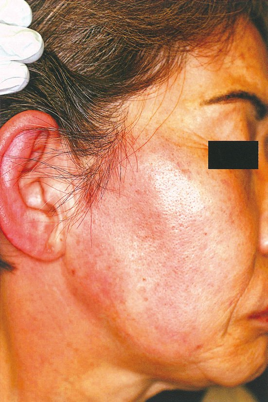
| 選択肢 | 解説 |
|---|---|
| ◯ ａ 抗菌薬 | ①2日前に「突然」発症、②右耳介・右頬部・右側頸部という顔面片側の発赤、③悪寒と戦慄、④38.2℃の発熱——丹毒である。起炎菌はA群β溶血性連鎖球菌なので、治療はペニシリン系を中心とした抗菌薬となる。悪寒戦慄を伴う発熱＋局所の熱感を持つ紅斑＝細菌感染という対応を確実にしておきたい。 |
| ｂ 抗真菌薬 | 顔面白癬・カンジダ症は鱗屑を伴い数週間かけて緩徐に進行する。2日で悪寒戦慄と38℃台の発熱を伴う経過は真菌症では説明できない。 |
| ｃ 抗ウイルス薬 | 耳介の発赤からRamsay Hunt症候群（耳性帯状疱疹）を連想したくなるが、帯状疱疹なら外耳道・耳介に集簇性の小水疱が並び、顔面神経麻痺・耳鳴・めまい・難聴を伴うのが典型である。本例は水疱の記載がなく、悪寒戦慄を伴う発熱が突然生じるのも帯状疱疹らしくない。 |
| ｄ 抗ヒスタミン薬 | 抗ヒスタミン薬は蕁麻疹や瘙痒に対する治療である。本例には瘙痒の記載がなく、発熱と悪寒戦慄という全身の感染徴候を説明できない。 |
| ｅ 副腎皮質ステロイド | 細菌感染にステロイドを投与すれば局所免疫を抑制して感染を増悪させ、壊死性筋膜炎への進展を招きかねない。「赤い＝炎症＝ステロイド」という短絡が最も危険な誤りである。 |
| 項目 | 丹 毒 | 帯状疱疹 |
|---|---|---|
| 皮疹 | 境界明瞭な浮腫性紅斑（水疱なし） | 神経支配域に一致した集簇性小水疱 |
| 分布 | 解剖学的な境界に従わず面状に拡大 | 皮膚分節〈dermatome〉に一致し正中を越えない |
| 先行症状 | 悪寒戦慄を伴う発熱 | 数日前からの神経痛（ピリピリした痛み） |
| 発熱 | 38〜39℃台 | 微熱程度 |
| 合併症 | 急性糸球体腎炎、リンパ浮腫、壊死性筋膜炎 | Ramsay Hunt症候群（顔面神経麻痺・耳鳴・めまい）、Hutchinson徴候（鼻尖の水疱＝眼合併症のリスク）、帯状疱疹後神経痛 |
| 治療 | ペニシリン系抗菌薬 | アシクロビル・バラシクロビル（発症72時間以内） |
| 選択肢 | 解説 |
|---|---|
| ◯ ａ 癜 風 | 癜風はマラセチア〈Malassezia〉による表在性真菌症で、角層に菌が存在するためKOH直接鏡検が診断に直結する。鱗屑をKOHで透明化すると、短く湾曲した菌糸と球形胞子の集塊が混在して見える（spaghetti and meatballs）。KOHが有用なのは「角層に菌要素がいる疾患」＝白癬・カンジダ・癜風・疥癬である。 |
| ｂ 単純疱疹 | 単純疱疹は単純ヘルペスウイルスによる。ウイルスは光学顕微鏡では見えず、KOHでは診断できない。迅速診断にはTzanck試験（水疱底の擦過物をGiemsa染色し、ウイルス性巨細胞＝多核巨細胞を見る）を用いる。 |
| ｃ 伝染性軟属腫 | 伝染性軟属腫〈水いぼ〉はポックスウイルス科の伝染性軟属腫ウイルスによる。診断は臨床所見（中心臍窩をもつ光沢のあるドーム状丘疹）で付き、圧出した粥状物に軟属腫小体〈Henderson-Paterson小体〉をギムザ染色などで確認できる。KOHは用いない。 |
| ｄ 伝染性膿痂疹 | 伝染性膿痂疹は細菌（黄色ブドウ球菌・溶連菌）による。細菌の検出にはGram染色と細菌培養を用いる。KOHはケラチンを溶かして真菌や虫体を見る検査で、細菌の同定には適さない。 |
| ｅ 尖圭コンジローマ | 尖圭コンジローマはHPV 6・11型による性感染症。診断は臨床所見と生検（コイロサイトーシス）、必要に応じてHPV検査で行う。酢酸加工（3〜5％酢酸を塗ると白色化する）が補助的に使われることはあるが、KOHは無関係である。 |
| 疑う疾患 | 行う検査 | 見えるもの |
|---|---|---|
| 白癬・カンジダ・癜風 | KOH直接鏡検（鱗屑） | 菌糸・胞子 |
| 疥 癬 | KOH直接鏡検（丘疹・トンネル）＋ダーモスコピー | 虫体・虫卵／トンネル先端の三角形の影 |
| 単純疱疹・水痘・帯状疱疹 | Tzanck試験（水疱底の擦過） | ウイルス性巨細胞（多核巨細胞） |
| 天疱瘡 | Tzanck試験 | 棘融解細胞 |
| 伝染性膿痂疹・毛包炎 | Gram染色・細菌培養 | Gram陽性球菌 |
| 皮膚抗酸菌症 | Ziehl-Neelsen染色・培養・PCR | 赤い抗酸菌 |
| 伝染性軟属腫 | 圧出内容のギムザ染色 | 軟属腫小体 |
| 紅色陰癬・頭部白癬 | Wood灯 | サンゴ色／黄緑色蛍光 |
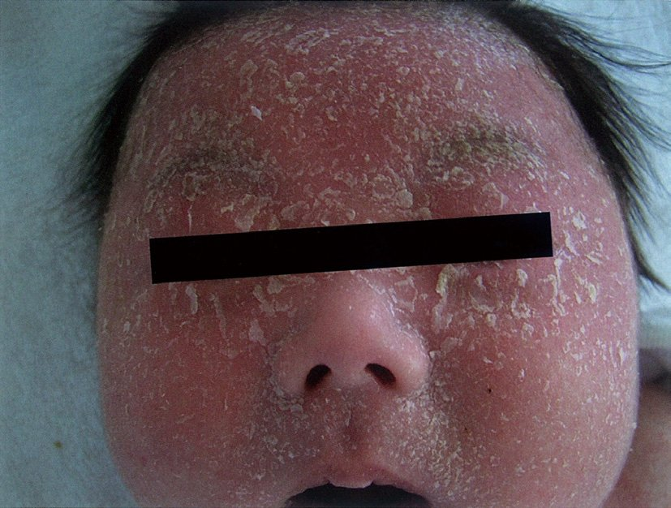
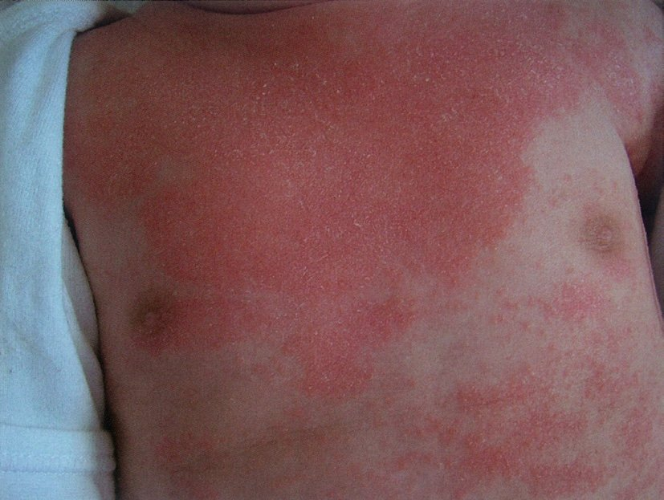
| 選択肢 | 解説 |
|---|---|
| ａ 溶連菌感染症である。 | ブドウ球菌性熱傷様皮膚症候群〈SSSS〉の起炎菌は黄色ブドウ球菌であって溶連菌ではない。黄色ブドウ球菌が産生する表皮剝脱毒素〈ET〉が血行性に全身へ回ってDsg1を分解する。溶連菌が起こす毒素性疾患は猩紅熱で、こちらは苺舌・口囲蒼白・全身の点状紅斑を示し表皮剝離は来さない。 |
| ◯ ｂ 粘膜症状はまれである。 | SSSSでは粘膜疹を来さない。毒素が分解するDsg1は表皮上層に多いが、粘膜ではDsg3が豊富でDsg1の欠損を代償できるため（デスモグレイン代償説）である。これがSJS/TENとの決定的な鑑別点で、SJS/TENでは眼・口唇・外陰の粘膜疹が必発である。 |
| ｃ 急性糸球体腎炎を続発する。 | 急性糸球体腎炎はA群β溶連菌感染（咽頭炎・膿痂疹）の続発症であり、黄色ブドウ球菌の毒素性疾患であるSSSSでは起こらない。ａと同じく「溶連菌」に引きずられた誤答の典型である。 |
| ◯ ｄ Nikolsky現象が陽性となる。 | Nikolsky現象は「一見正常に見える皮膚を指で擦ると表皮が剝離する」現象で、表皮細胞間の接着が広範に破綻していることを意味する。SSSSでは毒素が全身の表皮でDsg1を分解しているため、皮疹のない部位でも陽性になる。乳児が「触ると痛がる・抱っこを嫌がる」のはこのためである。 |
| ｅ 副腎皮質ステロイドが有効である。 | SSSSは細菌感染（＋その毒素）による疾患であり、ステロイドは感染を増悪させるため用いない。治療は抗ブドウ球菌薬（セフェム系等）の全身投与と、熱傷に準じた輸液・保温・創部管理・疼痛管理である。なお鑑別疾患のSJS/TENではステロイドやIVIGが用いられる——両者を取り違えると治療方針が正反対になる。 |
| 疾患 | Nikolsky現象 | 裂隙の高さ | 粘膜疹 |
|---|---|---|---|
| SSSS | 陽性 | 顆粒層（表皮内・浅い） | なし |
| SJS／TEN | 陽性 | 表皮全層壊死・表皮下 | 必発 |
| 尋常性天疱瘡 | 陽性 | 基底層直上（表皮内） | あり（口腔で初発） |
| 落葉状天疱瘡 | 陽性 | 顆粒層 | なし |
| 水疱性類天疱瘡 | 陰性 | 表皮下（基底膜部） | 少ない |
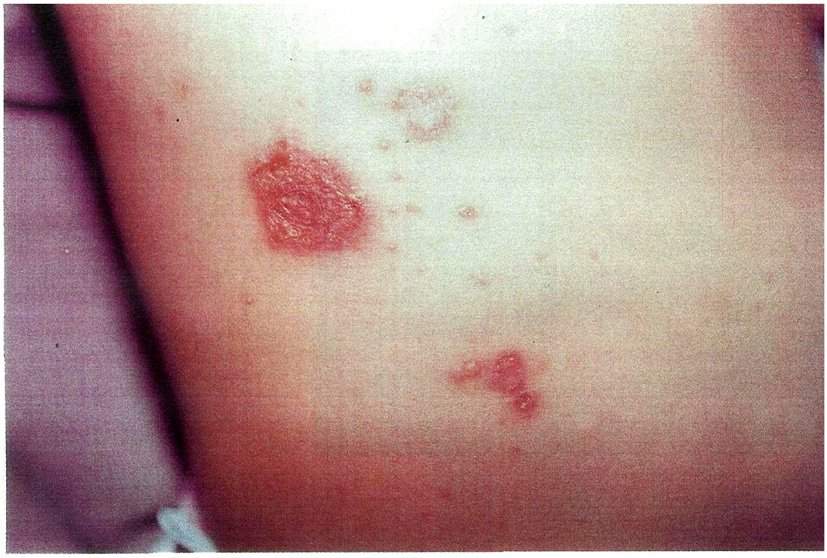
| 選択肢 | 解説 |
|---|---|
| ａ アルコール消毒 | びらん面へのアルコール消毒は強い疼痛を与え、健常な表皮や創傷治癒に必要な細胞まで障害する。現在の創傷管理では、びらん・潰瘍面の消毒は原則行わず、石鹸と流水による洗浄で細菌数を減らすのが標準である。 |
| ◯ ｂ 抗菌薬服用 | ①小児、②発赤と水疱を伴う発疹が増加・拡大している、③幼稚園で同様の発疹の児が数人いる（集団発生）——伝染性膿痂疹〈とびひ〉である。水疱を伴うので水疱性膿痂疹＝黄色ブドウ球菌型と考えられる。皮疹が多発・拡大している例では抗菌薬の内服（セフェム系等）を行い、併せて患部の洗浄と抗菌薬外用、被覆を行う。 |
| ｃ 抗ウイルス薬服用 | 水疱を伴うため水痘を鑑別に挙げたくなるが、水痘なら発熱を伴い、紅斑・水疱・膿疱・痂皮が同時に混在する「多様性」を示して全身（頭髪部・口腔内を含む）に散布性に出る。前胸部と腹壁に限局し、びらんと痂皮を作りながら接触部位へ広がる分布は膿痂疹である。 |
| ｄ 抗ヒスタミン薬服用 | 抗ヒスタミン薬は瘙痒に対する対症療法で、細菌感染そのものは治らない。掻破を減らす補助として併用することはあっても、「適切な処置」の主体にはならない。 |
| ｅ 副腎皮質ステロイド軟膏塗布 | 細菌感染にステロイド外用を行えば局所免疫を抑制して感染を拡大させる。膿痂疹は掻破した手を介して自家接種で広がる疾患であり、ステロイドは病勢を助長する。 |
| 疾患 | 分布 | 特徴 | 治療 |
|---|---|---|---|
| 伝染性膿痂疹 | 顔面・四肢・体幹（接触部位へ拡大） | 弛緩性水疱→びらん→薄い痂皮。自家接種で飛び火 | 抗菌薬（外用±内服）＋洗浄・被覆 |
| 水 痘 | 全身に散布性（頭髪部・口腔内にも） | 紅斑・水疱・膿疱・痂皮が同時に混在（多様性）＋発熱 | アシクロビル |
| 手足口病 | 手掌・足底・口腔・殿部 | 楕円形の小水疱。微熱。爪甲脱落を後遺することあり | 対症療法 |
| SSSS | 口囲・間擦部から全身へ | びまん性紅斑＋広範なびらん＋接触痛。Nikolsky陽性 | 抗菌薬全身投与＋支持療法 |
| カポジ水痘様発疹症 | 湿疹病変部（アトピー性皮膚炎） | 同じ大きさの臍窩をもつ小水疱が一斉に多発＋高熱 | アシクロビル全身投与 |
| 虫刺症 | 露出部 | 中心に刺入点。強い瘙痒 | ステロイド外用 |
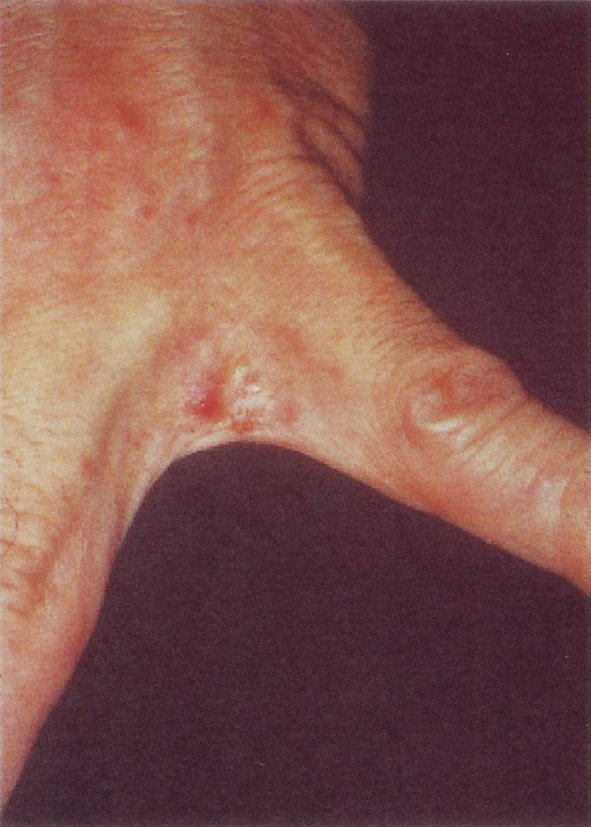
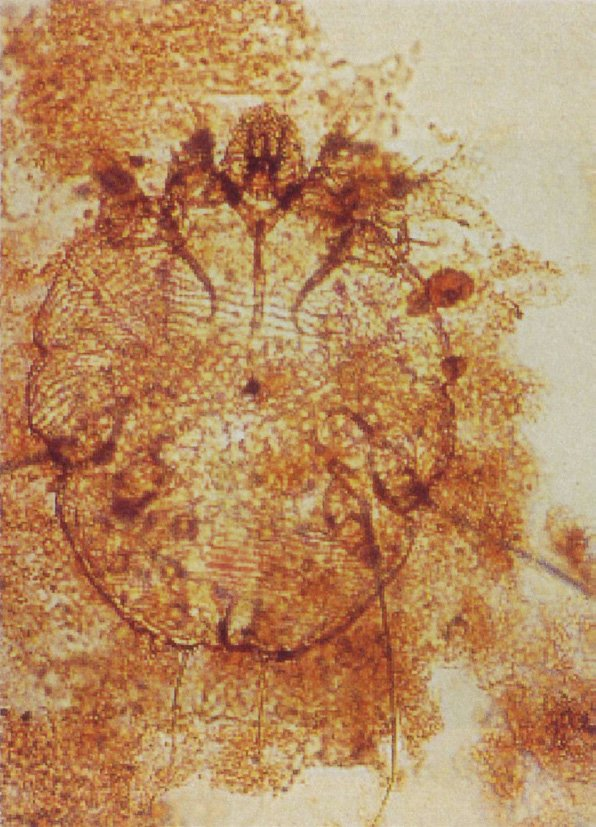
| 選択肢 | 解説 |
|---|---|
| ａ 抗真菌外用薬 | 指間の皮疹は白癬・カンジダも鑑別に挙がるが、KOH標本に見えているのはヒゼンダニの虫体であって菌糸ではない。また外陰部の強い瘙痒という分布は疥癬に特徴的である。 |
| ｂ 抗ウイルス外用薬 | ウイルス感染（単純疱疹・帯状疱疹）は集簇性の小水疱を作り、疼痛が主体である。指間と外陰部に瘙痒性の丘疹が多発する病態ではない。 |
| ｃ ビタミンD3外用薬 | 活性型ビタミンD3外用薬は角化細胞の増殖抑制と分化誘導を介して乾癬・魚鱗癬・掌蹠角化症に用いる。寄生虫を殺す作用はない。 |
| ◯ ｄ イオウ含有外用薬 | ①介護老人保健施設への入所後に発症、②指間と外陰部という疥癬の好発部位、③強い瘙痒、④KOH標本でヒゼンダニの虫体——疥癬である。イオウ含有外用薬は古典的だが有効な疥癬治療薬で、選択肢の中で唯一の殺虫作用をもつ薬剤である。現在の第一選択はイベルメクチン内服またはフェノトリンローション外用だが、イオウ剤は安価で妊婦・乳児にも使え、施設での使用実績がある。 |
| ｅ 副腎皮質ステロイド外用薬 | 疥癬にステロイドを外用すると、瘙痒が一時的に軽減して「効いた」ように見えるが、局所免疫が抑制されて虫体が増殖し、角化型疥癬へ進展することさえある。疥癬が「湿疹」として長く誤治療される典型的な経路がこれである。 |
| 手順 | すること | 理由 |
|---|---|---|
| ①疑う | 高齢者施設・病院で全身の痒みを見たら疥癬を第一に | 湿疹と誤診されステロイドで悪化する例が多い |
| ②診る | 指間・手関節屈側・腋窩・臍周囲・陰部を必ず診察 | 好発部位が診断の最大の手がかり |
| ③確かめる | ダーモスコピーでトンネル先端を探し、その部位からKOH検体を採る | 当てずっぽうの採取より陽性率が高い |
| ④型を決める | 通常疥癬か角化型か | 隔離・環境対策の要否が変わる |
| ⑤広げない | 接触者（職員・同室者・家族）を洗い出し、感染者を同時期に一斉治療 | 時間差治療は再感染の温床 |
| ⑥説明する | 治療後も痒みと結節が数週間残ると伝える | 不要な再治療と不安を防ぐ |